It is volume III of one weird book: 0 1 2
(this part is not only raw but also sometimes repetitious, because it's a draft, and in drafts I revisit the same topic again and again as goldminer returns to his mines)
א angel, a-l
ם me, мы and if we compare it to left & right, שםא is how we see others, אםש is as we see ourselves.
We don't know in what language these structures appeared, so any language will do. They're all synonyms across languages, so some words forgotten in one languages still live in another.
don't be surprised on following rawness, for I research it as I write.
This revelation of three mothers being birth (бог?) - man (me) - w looks like ש and ת could be z, though this similarity is probably caused by common similarity of alphabetic lines.
If it's M & W is it man & woman? because I wanted to speak of Man & Wile (Ewil.. so Eve it is. I told you Deva & Eva are Devil & Evil. It's all yin/yang.) Бог, Мэн, Уоман - такие же три первых настоящих персонажа в библии? Я снова возвращаюсь к библии. Хаха, я начал с Сейфер Йециры, Ш юю...
allows us to say that א is not soil, but air, as Sepher Yetzirah said. Yet if א is air, in the context of שא & מים it's שמים. Which makes א a derivative of ם & ש. If you only knew how difficult it is to combine semitic to european scripts, הmans fought beasts before they conceptualized a good god. Though reading what they've conceptualized about them may make us respect them somewhat less. Though soil, not air is the more common among elemental systems, what if it's the both. Air is the product of the earth, without the soil there would be no air. And ש is the chaotic energy which is some other force, and it makes us guests from space? Otherwise we would be the Earth itself. And are we not? We ARE! water is also earth? if air is earth, water is also earth. Isn't fire from within (and from the sun as well btw) a crucial part of the formula? It IS!
And they say that trinity is the one.
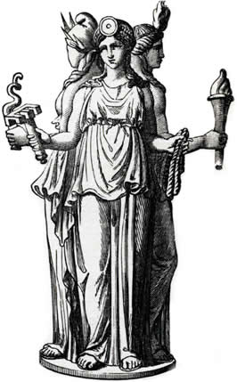
And I go on with my research:
Х ~ Ж if we recognize X as stavless Ж, ᚷ as stavless ᚼ
Also because J can be read as Ж [j] in french, but as ᚷ [h] in spanish
And position of russian Ж correlate greek H (and Z is after it, not in front as in greek. So does it make greek later relating to russian? In russian second row Z stands in the end, not in the front, but do russians have F after E? No, but Ё. (I spoke about it whether in this version or look for older ones in web archive)
ᚷ as stavless ᚼ exp;ains hot ~ жара and makes me believe that's the same t as in to, which comes ть in russian & る in japanese. (I)t seems to come ra in russian, while in verbs it's still tt. ротацизм сюда же.
co and go are invariants, and I suppose me in come is literally me, which make it two different directions.
Here's something I've put into chapter of swastikas, but it was after I spread this text, so you could miss it:
one benevolent witch taught me that swastikas are not lucky and unlucky, but male and female, I guess it's all yin-yang thing, and though sun goes sunwards, she told me to look at ursa m??or.
And she's right, northern sun is on the south and goes rightwards, which is explicitly clockwise when it's high in the sky, while the northern sky itself rotates counter-clockwise. I suppose sun is the man, while sky is shy, she, the one which embraces him in der himmel.
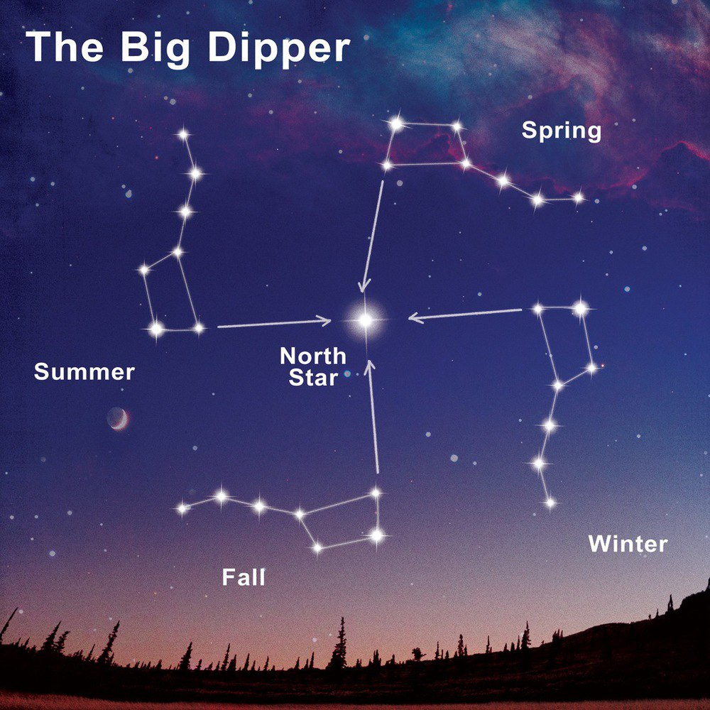
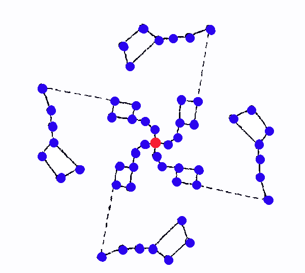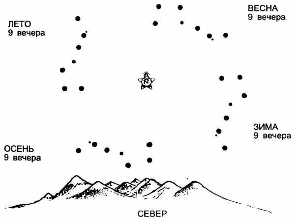
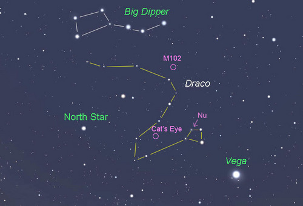

Путеводная звезда не луна, а полярная? Луна календаря, Солнце часов. Полярная для навигации
А какая планида отвечает за дни недели? 7 солнц.. может это именно что абстракция, как метр.
4 времени года, 4 недели в лунном месяце. 4 фазы луны конечно же! 4 времени года совпадение, что наш разум двоичен, и может ещё среднее найти, если цикл, то средних два. вот и получается, что 3 части и(у) линейной прогрессии, а 4 — у цикличной (год, месяц.. а что такое час, минута, секунда может быть сердечным ритмом, т.о. календарь с часами привязывают наши циклы к космическим)
ut re mi fa sol la ti?
lati utre mi fasol!
bott end with l
both ends are l as if gamut was a ring (a ring of a spiral it is)
look at how it go on piano keys and you see where's that L (between sol & la))
but untremifalsol.. utremifasollati is alphabetic:
ut is the only note beginning with vowel
re is vowel in hindi & srbsko-hrvatski.
mi & fa are the only ones beginning with labial
sol la ti are all lingual.
ti reflects archaic T of ת
I didn't expect to find it when I began this paragraph.
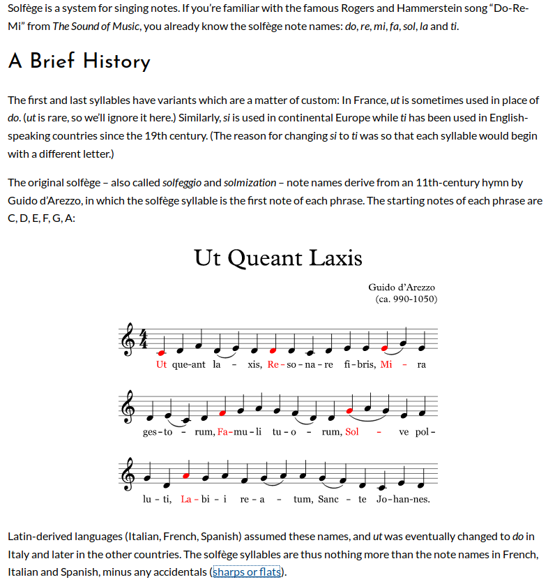
as you can see on the following images, the lack of B, B/H discord, could be caused by B whether being prohibited (them I'd bet it was connected to tritone being prohibited, but I can see its tritone is neither to A nor to C, so it could be not) or to who knows what secret is hidden behind this misconsequences.
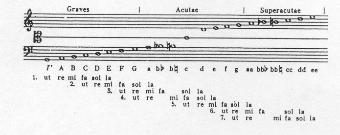
on this one we can see si or ti as te:
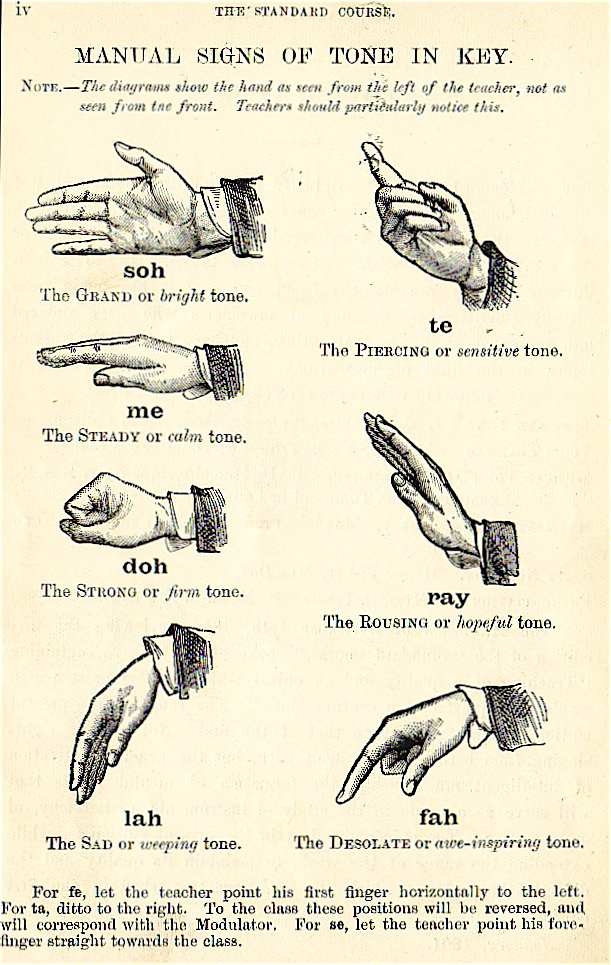
yet on this one we cannot and many musicians I asked about H didn't know and didn't seem to ever wonder
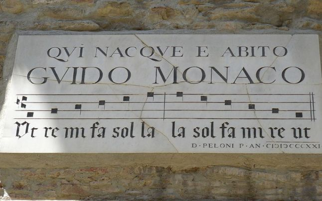
notice that H & B are invariants in japanese. Can it be connected? nah..
let's collect some more of these:
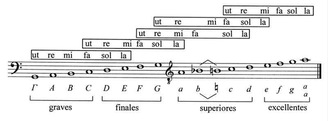
and this image is clickable (I'm going to link my images
more often from now on) and that link has brought: seculorum. Amen, often abbreviated EUOUAE.
it's some tool to denote syllables, I have to read it
myself and will return to this topic later.
Surprise is that in my own city lives another kid who've found something incredible in russian alphabet:
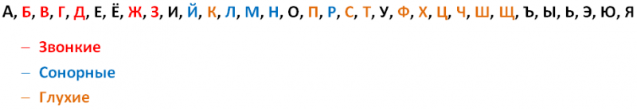
(clickable)
We see K breaking sequence once again (does it mean it wasn't tabooed, it wasn't invented in those ancient abecedarias of some archaic latin (I'm not sure that period is named archaic, you look it up yourself if you care of the exact taxonomy)
Also П can be an invariant of R which would go farting (the sound only some most ancient native americans lost in the jungle speak this sound. That 3-vowel tribe, I wrote about them, I don't remember the name.
This sequence of voiced-sonors-voiceless. Is not present in english, but we know that G is invariant of C and that C used to sound like G, at least I read it.
It is arranged as if students begin loud and clear in voiced forms of the letters, but getting tired their voices became less clear until it switched off completely and only wisper would come out. O & especially У are way more tired than A & E, vowels could also influence the enthusiasm of pronunciation. So it could be either appear this way naturally, or be arranged this way to ease the reading of the alphabet.
Let's see if such a sequence is present in any of other alphabets.
latin:
A B C D E F G H I J K L M N O P Q R S T U V W X Y Z
greek:
Α Β Γ Δ Ε Ζ Η Θ Ι Κ Λ Μ Ν Ξ Ο Π Ρ Σ Τ Υ Φ Χ Ψ Ω
compare to russian:
А Б В Г Д Е Ё Ж З И Й К Л М Н О П Р С Т У Ф Х Ц Ч Ш Щ Ъ Ы Ь Э Ю Я
in that row, namely T. and because QR look like diacritic OP.
and russsians take P for R (Р)
hebrew:
is somewhere near greek:
the only difference is that postionian greek doesn't see H as [h]
and that hebrew includes some additional letters (surprise!) but
they are voiceless, so who knows maybe it tells that they follow
this voiced-voicelss tendency more.
So is it just a coincidence, which became quasi-structure in one
of them, or is it common among all of them one way or another.
I would look for some structural tendency if latin shows no
tendency of having more voiced in the first half.
But P instead of B, T instead of D, I think this voiced-voiceless is set from the initial ABD/VFH
but let's conduct the experiment:
A B C D E F G H I J K L M N
O P Q R S T U V W X Y Z
Еven in latin second half has more voiceless letters, but it's on the brink of losing this tendency completely:
First half contains 4 voiceless: CFHK
Second half contains 5 voiceless: PQSTX (even though the second half as we broke it is 2 letters shorter)
And if we cound voiced, then
First half contains 7 voiced: BDGJLMN
Second half contains 5 voiced: RVWYZ (and if we count VW as 1 & Y as vowel, even less: 3)
But if we remember that LMN are the beginning of the second half of the alphabet (as official etymology of "element" tells) then it's only 4 voiced in the first half, and even if we exclude W & Y it's 6 against 4, which breaks the tendency.
J I H G F E D C B A
K
L M N O P Q R S T U V W X Y Z
But M is named as central letter, but even if we count J,
A B C D E F G H I J K L
M
N O P Q R S T U V W X Y Z
well, in this case first half has 5 voiced, and the second - only 4 (but if we turn W back on?)
It could also happen this way in latin because of some reform of sharing the voiced through the structure, not to make the pyramid way to obvious that bottom doesn't have a say.
Anyway, latin is an exception among those I've seen above, let's look into georgian alphabet, to see if it's just some hellenic fluctuation or some truer symmetry, which could be cause by BD PT of some ancient unknown alphabet, mama first papa second, baba dada also go this way, and if some southern nations call papa baba, this deserves its own research.
The reason I throw away R & not P is because the grapheme P is known in both latin & russian & greek, while R is only in latin. Also cursive k is even more similar to R than K and we need P as labial in our common structure of ABCD (notice that ABC also has voiced before voiceless)
then russians have П but no Р (could russian Р be invariant of П as if it's voiced form, even though it wasn't voice but bright vibration of lips. So could be R voiceless too (then we don't have to exclude it here) for it's brightness is not necessary on vocal cords, for it comes from tongue & alveols?
georgian:
ა ბ გ დ ე ვ ზ თ ი კ ლ მ ნ ო პ ჟ რ ს ტ უ ფ ქ ღ ყ შ ჩ ც ძ წ ჭ ხ ჯ ჰ
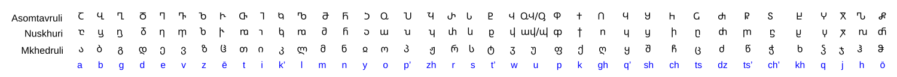
this image includes ჱ ჲ ჳ though they were excluded from the modern I gave above it, and it doesn't have ჯ
and also excleded ჵ ends it with few more signs I don't recognize.
Surprisingly, in georgian voiced-voiceless tendency is less preserved than even in greek & hebrew
(or is it, on contrary, promoted) for not only R but several other voiced letters appear in the second half.
Still it's more obvious than in latin, especially if we split it as it is, however we break it the most of voiceless are in the second half. But if M is the central letter, both halves have the same ammount of voiced.
In conclusion to this paragraph I have to say that this tendency is definitely present, but if it's artificially conceived or has it occured naturally this is almost impossible to say, probably reformers of russian alphabet noticed this tendency and fostered it a little.
This tendency also supports the idea of russian В being placed in the place of F, for it could be voiced before, they say it used to be W - semitic vav is voiced. And В looks like θ which used to belong somethere.
Let's look at all of the sudden spectacular russian if we consider Р [r] voiceless (whisper of r is r)
it's only K out of structure. And the border exactly where that roouh saw it: (I also write mahead with m)
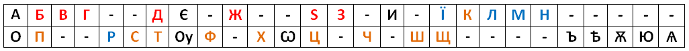
Though If I understand Р (Russian R looks like P) as voiceless because it's whispering has no pair, and thus voiceless M is also M. while voiceless BDGJVZ are PTKCFS (C here is Ch, for only K is always K)
Then we can understand russian alphabet as
А Б В Г Д Е Ё Ж З И Й К Л М Н О П Р С Т У Ф Х Ц Ч Ш Щ Ъ Ы Ь Э Ю Я
was it logic of those who placed sonors among voiced & voiceless? let's look at those sonors:
А Б В Г Д Е Ё Ж З И Й К Л М Н О П Р С Т У Ф Х Ц Ч Ш Щ Ъ Ы Ь Э Ю Я
and in halves:
А Б В Г Д Е Ё Ж З И Й К Л М Н
О П Р С Т У Ф Х Ц Ч Ш Щ Ъ Ы Ь Э Ю Я
and I was thinking the other day: " what if Ф is initial form of P, because there's no Ф in latin, but that's not what my thought began with. I began with looking at runic labials: ᛒᚠᛉ and even ᚢ all are dual. except P, which is neither in the bornolm runic alphabet (named by von List as armanen runes)
So what if these two rows are voiced & voiceless and as genomic apparatus checks for mutations comparing two strings, we can reconstruct earlier phonetics of those alphabetic signs.
А Б В Г Д Е Ё Ж З И Й К Л М Н
О П Ф С Т У Х Ц Ч Ш Щ Ъ Ы Ь Э Ю Я
but the counterpart of Ж is Ш
А Б В Г Д Е Ё Ж З И Й К Л М Н
О П Ф С Т У Ш Щ Ъ Ы Ь Э Ю Я
There's now now labial after У, but only because there's no labial after EЁ
but it's F after E, and it's Ф after У
but Ф is already used. but what's use of the two voiced after O? Ф may be used instead of P, then why П?
let's look at latin once again:
A B C D E F G H I J K L M N
O Ф Q R S T U V W X Y Z
most of the voiced mess is in the final line (we russians have all final line of vowels, what is your voiced)
so let's look at it in the ancient form:
A B C D E F G H I L M N
O Ф Q R S T V
V could reflect F for some reason: Vav is voiced F, V is read as F in german: von sounds as fon.
A B G D E F
O Ф Q T UV
what is it? two octaves? but they're in sixs, not sevens. could it be related to 6 being so popular among heathens? Are those 6 reformed pentatonica? Then 7th note would be the further reform (maybe even from some other confession)
So what was the initial form of those two "octaves"
A B G D
O Ф Q T
Ф is long P, double P. (B is read as V (in greek & russian) and pey and fey are the same letter in hebrew)
then B is doubel b (B is v in russian, Б is b)
so now there's 8 of them. could it be where the word octave comes from?
now these two lines are in abcd mode. let's look if they can be in axial:
A
B G
D O Ф
Q T
actually yes. and V is envoked by it.
A
B G
D O P
Q T
V
Shouldn't I make up my mind if V is labial consonant or vowel? But it is both, in different cultures it's both, and sometimes it's in the same culture both (as vav in semitic languages, even though both lineal & axial symmetries recognize vav as labial consonant, and maybe that's why both و & ו stand for "&" and both are consonant labials: و is wъ, ו is v, and we can see that more modern arabic has drifted more towards vowel u, and today ו can be used also for u & o, but to make it o (literally "or") we have to put aleph before it: או, which reminds me of יהוה being transliterated as Io, which reminds both greek deity (and I'm not exactly sure it's the same Io whose priestess invented alphabet, but wth, of course it's her) and polynesian highest deity of a cult very similar to judaism, I think I've already wrote about it, and I think I wrote that ה makes ' & ו vowels, but isn't י vowel by default? Those who know hebrew probably laugh at me right now.
that abgd-opqt pair keeps v vowel, and yet I'm not sure this reconstruction reconstructs any representation actually existing in the past, roouh begins with one ancient russian abecedary, and look at it, it breaks the alphabet in half exactly between voiced & voiceless (wonderful thing is that k is missing, and it doesn't seem to have enough space for k:
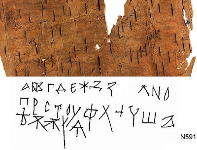
though it could be a coincidence, because he puts о in the previous line.
א ב ג ד ה ו ז ח ט י כ ל מ נ ס ע פ צ ק ר ש ת
tells me that if that voiced-voiceless order is the original one (it's more present in hebrew, than it is in latin, and it is somewhat general that voiced tend to gather in the beginning of the alphabet (B is voiced, K is not, so now let's look how it is in eastern ones:
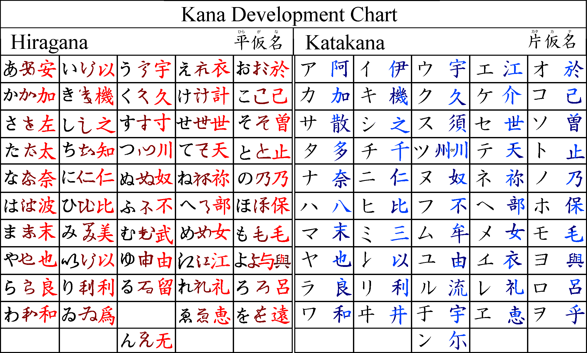
they all are voiceless by default and ゛ makes it voiced (only the sonor ones are voiced already: m, n, l/r
wait a minute, there are more of those: it goes a ka sa ta na ha ma ya ra wa n
 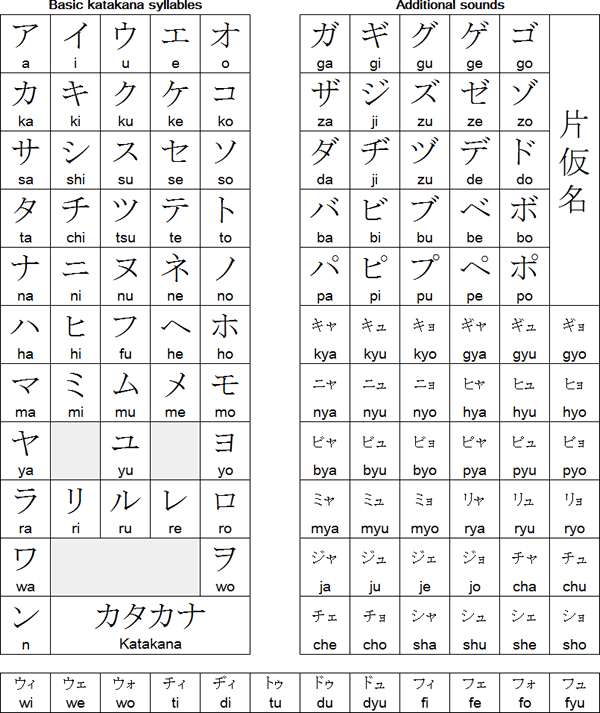
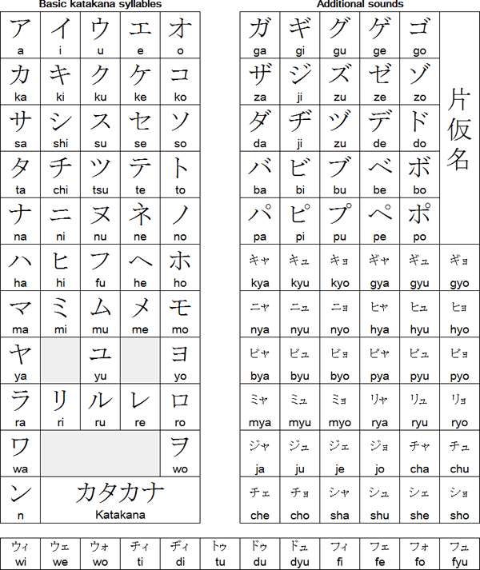so it's definitely voiceless (those to which ゛ can be applied) in the front, sonors (voiced by default) in the back. it breaks between ta & na & only ha goes exceptional, and it is exceptional, because it can be applied with ﾟ to make p- but it's b when ゛ is on it's right upper corner, but it's more funny than this, because that ha is more weird than that: it's wa most of the time: boku wa baka gaijin desu, sumimasen, this wa is actually that very ha, so if it's wrong that it's ha or not, it's exceptional, and other than that mayarawan are all sonors, and kasata are once again remind second half of the first raw: as if ha was replaced from it's honorable position. ahakasata - is it how it was? because I was already seeing things like aka satana (akai is red in japanese, and -i suffix is the same as russians use for adjectives, and russians sometimes just don't use that suffix to create so called "short adjectives" which may tell that adjectives are as ancient as nouns and verbs. red can be even more primal than raid.
But back on track, what I wanted to say is
א ב ג ד ה ו ז ח ט י כ ל מ נ ס ע פ צ ק ר ש ת
arranged as voiced-voiceless may present its primal form:
א ב ד ה ו ז י מ נ ע פ ת
as four representations of the same two letters, as sillabaries do, but this time with only 4 vowels & 2 consonants, even before 5 vowels, B and T
You can notice that this way they're grouped according to IPA into plosive, fricative, nasal, whisper. IPA puts B&D in the same group, and D&T too, so I named those voiceless whispers by miself. Which may witness something about the jewish vowels themselves. Is O a wisper form of A? Because ע is related to O. It could be more related to У, but it stands at O position. Though if we compare the final line of jewish alphabet with У line, we get У as ע and Ф as פ which is direct transliteration and Х as צ which is weird, though cursive צ looks like З (there's no unicode for cursive, so watch it up in that .odo addon) and initial X does sound like Z. Ц as ק which is equally weird, though C could stand for both, Ч for ר which is quite a coincidence, because cursive ч looks exactly like cursive r - is it why they call it cursive? as of curse, the script which made them misunderstand one another, tour as cour? Ш ש which is exact transliteration again, Щ as ת
which is just wonderful, because after that go some weird theatre of vowel row, beginning with silent special sign named "hard sign" (твёрдый знак) and graphically ъыь remind 666 as much as uvw remind it in other domains, but I already wrote about it.
How I reconstructed that
א ב ד ה ו ז י מ נ ע פ ת
is I began at the ה ו ז ח ט and removed the messing ח ט because we don't have these two in russian (is it an argument enough? but what if russians had alphabetic canon before christians, and though I only shyly attempted to notice this possibility (because they were caught redhanded in this sort of crime of claiming authority over something they didn't author)
after that it was clear that has to go (because bornholm alphabet's first row only has ᛒᚦ instead of BCD, because of b d symmetry shining on so many levels: BD, БД, ⰂⰄ, 𓃀𓂧 and even בד are probably here, but сСГⰃ(𓈎𓎡𓎼)ג never plays this game, which makes me think it should go from the protoalphabet (it also didn't exist in that mythic 5 vowels, B & T, and also only latin alphabet has velar column distinctly, unlike the others)
I knew M had to go first, an we still have N following, which marks L as invariant of I further in history than N as invariant of I (И) if it even is, for if it is, M must be an invariant of И too, which would be super weird, because I is lingual, and M is labial. but AIU correlate AMT if you even know what I mean, I think it's one of those moments when I'm so high in that depth, that even me won't be able to make sense of this.
So here I already had a distinct pattern, so to determine which of many voiceless sounds of the fourth and final row go into my reconstruction of protoalphabet wasn't difficult at all. P & T of course. which is kinda sad, because I expected to see this bd
pq in the first draft of it. Is T secretly Q? Then D is secretly C, and what if they write чево as чего only to entangle that subject even more. There's no "they", they don't know shit.
and what about אמש? same, truth is אמת and ש is for שטן
then what is S on the chest of Supermensch?
Roman secunda is 24 times longer than ours
Does it mean one hour in their system was a term for a day?
Година is hour in ukrainian, but year in russian: год is year to be precise, so russians would understand година as год.
Is it why "сейчас" (now) is more likely to mean "сегодня, сего дня" (today) than "сей час" (this hour, tohour) - well, no, сейчас сегодня собраны по одному принципу. сей и сего - просто в разных падежах. Но разве разница в падежах не являет иную грамматическую форму? если бы их собирали одновременно, то сейчас, сейдень. "Сегодня" более изысканно флектуатическая структура, а значит она с некоторой вероятностью была собрана позже, потому что "сейчас" это китайцы так слова собирают, а они законсервировали грамматику на самом раннем этапе из всех что я знаю. И я считаю что это свидетельствует о древности их письменности и языка. Could egyptians just combine chinese & meroitic principles for political reasons and so (fo(r) to so - бо which is ибо, or is it too wild to mix languages in one выборке? I don't know I write if as my own draft, so I use both languages, co is form of go, or visa versa, and if -me could be me, fuck ''''s, co is not russian ко, к, semantically they are different. but "на хуй" (на ~ к) has semantic values of go, So I wanted to prove that come is not ко мне, but instead I found verbal features in prepositions) both communities could read the text? (that grey text before it went into something important, read at least the end of it: prepositions may have verbal values)
Ни сегочаса ни сейдень не замечено, кроме фразы "по сей день" ((up) to this day..)
but back to that outstanding claim that prepositions have verbal meanings:
пере = пр(ыгай) (s)pr(ing) pr(one) (прыгает на)
but also пырять. you do understand how easy it will be for them to ridicule you here? he who's affraid to look foolish doesn't have a chance to become great, so they say, the other they.
у- stands for something like away (and for way in "way (too big)") notice that it's у [u] common between away & out, which in russian is вон, прочь, от as direct cognate of out, which corelate it with off and of.
Which made me think of u- (especially initial one, or even any initial vowel) to inverse what follows: out = of, idi = go (idi is go in russsin: иди) and there probably were some other examples. I reallly have to scan those notebooks. that very k appears in japanese きて (kite) and 来る (kuru) both -te & -ru are verbal suffixes. (ru is pretty much english to, put as postfix the way russians put -ть and even -те (literally te) also notice how て looks like t, I'm pretty sure there's more to this than just coincidence.
至る (itaru) is another translation, and though it also stands for "through" if it's written with another suffix, 至て, it's itate, which reminds me of russian идёте [idöte] and not to look like idöte myself, I think I will leave these comparisons to some passionless statistical ai. I think those guys can make some awesome job using the brave approach I offered here, comparing all the languages globally, ignoring all the human-made definitions, reconstructions & divisions into families or whatever. And then maybe even other animals' languages will be compared with ours.
This alphabet which is persian, not arabic (arabic lack few of these)
ا ب پ ت ث ج چ ح خ د ذ ر ز ژ س ش ص ض ط ظ ع غ ف ق ک گ ل م ن ه و ی
is also alphabetic if you watch at the first letters in the groups:
ا ب ج د ر س ص ط ع ف ق ک ل م ن ه و ی
all I was going to say is ه و look like E F when they're written in a different font: هو
(you should try to type mixing hebrew or arabic with latin or russian, it's a mindf
----use this merged coloured hu in .odo-----
Notice that having removed the doublets, we got ourselves 18 letters, which is a magic number of 3 sects
(sects are aettir but of 6s)
sso is 6s & 8s the same old war for geometric forms (arabs adore 8-poiinted star (it's united) while jews prefer 6-pointed star (it's separated)
6-pointed star is probably historically more ancient (it's both less points, 18-letter alphabets are older than 24-letter ones, judaism is older than islam) but 8-pointed is also a cross. and sun shines mostly across (but it's because of the effect our eyelashes create (because sun rotates together with our head, and the cross is seen when eyes are half-closed, otherwise sun goes all the way)
The idea of separation of the alphabet into voiced & voiceless can be used as an instrument to deliver the previous form of the alphabet:
ا ب ج د ر س ص ط ع ف ق ک ل م ن ه و ی
First I noticed that this way we have vowels in the end (as russians coplete it, as greeks had omega, as runic alphabet had ᚢ (v, u (oo)) and roman alphabet had V, v (v, u) and russian alphabet had Ѵ, ѵ as finals)
And just before those vowels ن [n] stands and in greek minuscule [n] is ν
and after jewish נ [n] stands ס which looks just like ه - could there be some cultureal correlation (and the script is of the same size, but hebrew is extra large in the text, otherwise it was really small, and arabic is in normal size (as is all this text) let's make it extra extra large and compare them:
ا ب ج د ر س ص ط ع ف ق ک ل م ن ه و ی
ا ب ج د ر س ص ط ع ف ق ک ل م ن ه و ی
ه stands where ס does. and they look the same, and I hate to diss your concealium, consealium, what is the word.. concilium, but I must notice that after n o fololows, and it looks exactly like ه and ס especially if you know they're backwards. So who's reading those texts wrong all the time?
ه is definitely closer to o than ס, especially if you transliterate it into jewish ה which stands where e does, not o. but in arabic even though ه is closer to vowers than ס is, which also reminds greek σ - which resembles o just strikingly! and σ has it's own story of how Σ looks like E and that school=ecole, student=etudiant, and some more examples of the kind there is. scream just gets rid of s or e, and it's cri
and even though it's not greek, but french, just as sign languages don't correlate speaking languages, so writing systems can be not corresponding with the languages they're used for, hence this babelonian mess I'm disentangling here.
and ◯ could be a holy symbol, named by different nations differently, and thus... just a speculation
but if ه is sun, و can be the moon
and they stand together in the second row, where E & F do, and F is moon, because it's not always full.
and F is connected with fornication, and moon is the night, which is more proper for sex, and it's literally 6
and 6 looks like و, though 9 would fit more. And if we count it backwards from و, we may find that if و is 9, then 1 is ع which opens the second half of the alphabet, only it not begins, but ends with LMN. And it's 10 of them in that second half, and the first half is of 8, and if we abruptly exclude 9 & 10 from the second half, we'll get alphabet of 16, as that "younger futhark" - I believe it's literally younger than it's older form, like when the system wasn't developed enough, when it was young. see the mindf/?
and the final letter looks like 。 which is as ◯ named maru. and 。 is japanese . and dot is how one of ugaritic alphabets end (I never saw the artefact they took it from, but it's there, in their literature, I guess.
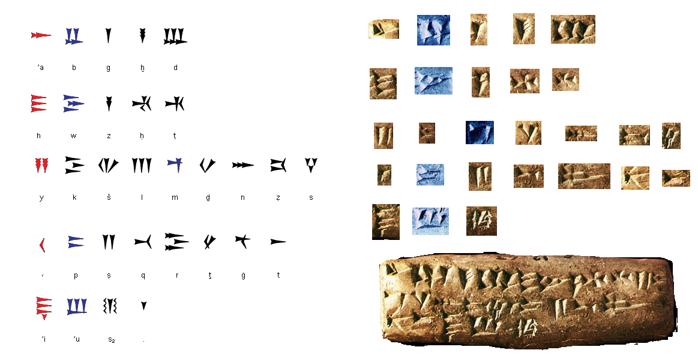
So if ه is a dot, و can be a comma. And whatever ی is, it can be wind if ه and و are sun & moon.
(in one russian fairytail a prince asked from sun, from moon & from the wind. Are that another representation of trinity? saint spirit is similar to wind. but son as sun seems to be related as heresy by older religions, father is the king, that's the old order, son only transmits its will (even when king is dead, he was deity ever-living), then son is not sun, but moon, man he is.
But back on track, why don't I go further and don't compare ع to three? why stop where it's convenient? have I ever stopped? then I'd call ا the 1, then I'd see nothing better than to name ج the 2? then ط the four? nah... though I think I saw something of the kind somewhere (here I wanted to dig deeper, but no, this path, if it even exists is still too early for me, I've already bought books on history of numbers, so I must read them, but I have so many thing to do, so I must go on train to make myself read.)
و can be a comma especially because it stands for "and"
LMN ending the alphabet makes another sense because it ends it with aMeN
and alumin is a joking mocking of аминь, but that as I heard it, aluminum was considered the most precious until we figured out how to extract it. alumni is also a word meaning of which I still don't know...
anciens élèves
ancien élève is alumnus (singular form of alumni is alumnus, so it's a latin word and I haven't switched the dictionary from french. turning it to russian I can see that it's not something ancient, it's выпускники, so to say old students. isn't alumnus cognate of eleven? (-en = -es in different languages I spoke about it, why do I even dig this raw grounds?)
what happened here? why all this alumin part is so poor? probably because I just switched into physical work, thinking of doing something else, and moing just first thing, I gravitated back to this text again.
(so that's it for today, let's do something else indeed)
al aMeN
(so maybe alphabet is an ancient prayer? I heard it was used as some magical amulet. then additional letters were to correct the ancient grammar: as in который instead of коий, but I don't say this word was there, I just say what I think, and I'm still in that working mode, I didn't go as I said I have to.
al aMeN
stands for "the truth" as I was told, Amen is אמן - but reverse translation translates is as artist, but in yiddish it's recognized as amen again. Any way, that אמן is definitely related to אמת... I guess I found myself a better jewish script: א ב ג ד ה ו ז ח ט י כ ל מ נ ס ע פ צ ק ר ש ת at least now it's in full size, and here we found why that one was so small, it made latin smaller too.
that אמן is definitely related to אמת I was thinking about when I wanted to compare that al aMeN to those three mothers.
But let me finish this topic before I go away:
ا ب ج د ر س ص ط ع ف ق ک ل م ن ه و ی (red are voiced, green are voiceless)
First i wanted to guess that س ص ط are some ignorant extras, so applying that voiced-voiceless thing we can replace them and ل م ن ه و ی too, but now I see: what if their structure was to keep silents inside and voiced outside? Doesn't it make sense? It does. So hail diversity, or something, let all the flowers bloom, some of them may happen to be of youth and you don't know which (use, not youth, but I cherish typos, and this one can be exactly right: some flowers can be of youth, and we don't know which. and even when we gain the eternal youth, those flowers still can be of use to us in the eternal future it's for sure)
Why did I remove all those dotted invariants? Because inclusion of those ones disrupts the structures in european alphabet, ancient texts are reported to include no dots. at least in hebrew, I'm not sure of runes.
I think I already mentioned it somewhere before, but this sequence also has labials after vowels:
ا ب ج د ر س ص ط
ع ف ق ک ل م ن ه و ی
and again م is the exception, yet even و is preceded by ه, which makes me think that ی could be lingual y before. As if this sequence was before. hm.. anyway if ی is vowel in that end, it puts him along with greek. Though that shout.. shourt.. short like ..line is weird, the same is in gu.. ugaritic. I'm also hungry now, goeedbye... notice how that very i-line is collected in the end, as if it's the newest, the most disrupted too.
Notice, that ه isn't actually vowel in modern arabic, and ی can be shortened to й, the [j] and only ا and ع are always vowels. و too can be vowel, but just as ی, not always, so these final two also make a pair, a pair of semi-vowels. and ه is probably one of them, though it's never vowel in arabic, it's always vowel in hebrew, and always vowel in greek, latin, and all the others actually.
I didn't find much when I looked for ع being the same sign as 3, but it's also the same sign as E. And both are followed with fey, and b is for бог/ so are these just male & female pairs (which makes sense: women historically (and actually physiologically) had less voice (half of that of a man in shariah court) and yet vowels were named female letters, and females managed to have more vowels, and more letters than man (as they have bigger attention to nuances, just as they have names for more colours than guys usually do) and more labials are on their side (the ratio is the same as with vowels. And isn't it the answer to why there are three mothers, but four or five labials? B is Babushka, the Granny (B & G the same again. Бог Господь)
Granny can be kinder than mother, because she's way less disturbed with freudian bs, and mothers often have no idea how to treat their children, once again, it's just a speculation, something can happen out of it, I have long went into draft mode, if you want something more certain you should probably stick to the first volume, and even there be cautious of my usual liberties. Feя, Mother, Vulva? I'm only guessing, looking for the most female words. Female, Fe in that word plays the same role as Wo in Women. Here Wo sounds as We probably because We is actually a plural form of Wo () which tells a story of that word being of female origin.
Parts of Garifuna vocabulary are split between men's speech and women's speech, and some concepts have two words to express them, one for women and one for men. Moreover, the terms used by men are generally loanwords from Carib while those used by women are Arawak.
Unlike other languages of the region, Yana has different word forms used by male and female speakers.
Интересной особенностью чукотского языка является то, что женщины и мужчины говорят по-разному. Для женщин существует табу на произнесение имён родственников мужа и похоже звучащих слов[5]. Разница существует также и в произношении обычных слов. Там, где мужчины произносят звук «р» или сочетание «рк», женщины произносят звук «ц» или «цц». Например, «морж» в мужском произношении звучит как «рыркы», а в женском — как «цыццы»[6]. Другие примеры: мужчинами произносится ч, женщинами — ц: чайвыгыргын (муж.), цайвыгыццын (жен.) (в предложении Чайвыгыргын мыгитэгъэн! / Цайвыгыццын мыгитэгъэн!) или чайвыгыргын рэгитэӈэ (муж.) — цайвыгыццын цэгитэӈэ (жен.); «с» также может заменяться на «ц»: мылгынутэсӄык панрэвкы (муж.) — мылгынутэцӄык панцэвкы (жен.) (в предложении Тыӄэӈавытыйӈын мылгынутэсӄык панрэвкы вальык нымӈиӄин / Тыӄэӈавытыйӈын мылгынутэцӄык панцэвкы вальык нымӈиӄин)[7].
here somebody collected such cases for us:
Some natural languages have intricate
systems of gender-specific vocabulary.
- Irish Sign Language, due to single sex Deaf schools, developed separate male and female vocabularies which can still be seen today.
- It is speculated that Sumerian women had a special language called Emesal, distinct from the main language, Emegir, which was spoken by both genders. The women's language had a distinct vocabulary, found in the records of religious rituals to be performed by women, also in the speech of goddesses in mythological texts. There has been some dispute about the role of Emesal, with suggestions by some scholars that Emegir was a dialect used by the public and more informally while Emesal was a literary language.[59]
- For a significant period of time in the history of the ancient languages of India, after the formal language Sanskrit diverged from the popular Prakrit languages, some Sanskrit plays recorded the speech of women in Prakrit, distinct from the Sanskrit of male speakers. This convention was also used for illiterate and low-caste male speakers.[60]
- Garifuna has a vocabulary split between terms used only by men and terms used only by women. This does not however affect the entire vocabulary but when it does, the terms used by men generally come from Carib and those used by women come from Arawak.[citation needed]
- The indigenous Australian language Yanyuwa has separate dialects for men and women.[61]
- In Ancient Greek, there is evidence for some difference between the speech of men and women, as evidenced for example in the comedies of Aristophanes.[citation needed]
- In the Lakota language, a small number of enclitics (approximately eight) differ in form based on the gender of the speaker. While many native speakers and linguists agree that certain enclitics are associated with particular genders, such usage may not be exclusive. That is, individual men sometimes use enclitics associated with women, and vice versa.[62]
Also that list lacks japanese difference in male & female forms of japanese:
https://en.wikipedia.org/wiki/Gender_differences_in_spoken_Japanese
(huh, now I see it as my duty to add Chukchas & Nihonjintachi to that list, duh)
If Man & Woman are words of female speech, Male & Female are probably male cognates? Is Fе Вы or We?
Man initially "of some ma, born" could be botched in male mouth as male, and could give birth to personal pronouns me & мы. Pronouns, prefixes, suffixes, copulas, these short words and whatever definitely have keys to the protolanguage, I believe if I focus on them, I'll be able to see the structures language owned when it had no other words than the short ones. And if I had an access to the real ai power I would ask it to compare chinese with those short words. But a guy who has this access is to curly to be friends with such a nazi as me, I didn't even troll him, but he didn't understand my love to ахс. And not as if I wanted to be friends with him, because though he works with ai, I was told he dislikes them. Why? Because he loved chess, and AI made this hobby irrelevant. Can you imagine that mentality of that guy. And as usual, he has the key to the lab even though he's not the best fit for this place. It's hard to have fit pals for every plays when you are just a tiny minority and your role is to moderate the progress, so it doesn't boil over the top choking the fire.
Матерный язык delivers again:
fuck yeah / fuck you
yes / no
but in russian it seems to be the opposite:
хочу / хоти
ти = ты
чу = я? I only know аз as the previous form of я in russian. I is Ah in scottish language of Welsh (even though he's scottish, he's welsh, it was my first guess "who is he? welsh? no, human traffic is welsh, irish? scottish? he's scottish, edinburgh, like what he's name? welsh? he's scottish, but he's name is welsh? Imagine if it's a brittish psy-op to seed subconscious enmity between scottish & welsh? Who am I now? A great political expert? Why do I dig into this? My minds digs, probably I should leave pol forever. please do. Ah is similar to аз, because h is the vinal letter in the second row, just as з [z]
H / 𐌆 (sometimes it's even more like rotated H, but isn't I sometimes? that H / 𐌆 I took out of some weird place, but it still revokes the question of H E Σ S Ϻ M I И H Н N n п р p r г ג λ Λ L l I (if Λ, why not A? ا!)
isn't it just apophenia just at least this time? I don't know, some of it definitely is, but my and ai task is to figure out which is and which isn't systemic.
ти ≠ ты: хотеть (ть=to), хотим (м=мы)
so хот и корень. hot! 欲しい (want (хотим (хорошие ( 良い (good - and I didn't expect how close it'd be to hot!)))))
Apes say aiou
I heard of a guy telling that you can understand any language by its inTONEation.
Did he speak of vowels? Come on is equal ot to на.. да ну, because come is red as kam. because on is ~ u
(as if initial vowel inverts that n (greek ν [n]))
I need ai to create dictionary in vowels.
imagine how that ape would read this line: a i (screams) u ie ioai i aue
How many words can be written in 5-letter long vowels?
5 vowels * 5? nah, you mathematician. it's factorial.
it's probably not, because we can use the same "coin" more than once. once is flexic form of one. as funk
in 1 vowel and up to 1-letter longs we can create 1 word as if c = time, as if n = ну in ебаца
in 2 vowels and up to 2-letter longs we can create 4 words + 2 words = 6 words.
in 3 vowels and up to 3 letter longs we can create ? words + 9 words + 3 words
aaa
aai
aau
aia
aii
aiu
aua
aui
auu
in 1 vowel and up to 1-letter longs we can create 1 word
in 2 vowels and up to 2-letter longs we can create 2 words + 4 words = 6 words.
in 3 vowels and up to 3-letter longs we can create 3 words + 9 words + 3*9 words = 39 words
in 4 vowels and up to 4-letter... oh boy
a
i
o
u
aa
ai
ao
au *4
aaa
aai
aao
(aau * 4)*4
aaaa
aaai
aaao
(aaau *4)*4)*4
in 4 vowels and up to 4 letter longs we can create 4 + 4*4 + 4*4*4 + 4*4*4*4 = ...
in 3 vowels and up to 3 letter longs we can create 3 + 3*3 + 3*3*3 ? yep, 3 + 9 + 27
in 4 vowels and up to 4 letter longs we can create 4 + 4*4 + 4*4*4 + 4*4*4*4 = 340
in 10 digits and up to 10 digit code we can create 10^10 + 10^9 + 10^8 + 10^7 ... ?
what? ah, yes, 10-digit code (as on a suitcase) cannot have 1-letter words, so it's just 10^10
in 10 digits and up to 10-digit lock we can create 9 999 999 999 +1 (0 000 000 000) = 10 000 000 000 codes
in words it would be 11 111 111 110 words
in 5 vowels and up to 5 letter longs we can create 3935 words. And it is enough to communicate even on human level. but hardly do apes have 5 vowels. yet intonation is not only vowel, but how it's pronounced. one word can be said differently to mean different things. I thing witgenstein spoke about something like this, but I didn't read him, my friend told me about it. come on! may bе и да ну и давай
Now we're talking of decoding birds' & animals' languages. is ' i?
Intonations allow to use the same letter differently: aa may differ depending on which letter is stressed:
aA is universally(?) yes
Aa is universally(?) no
universe ~ необротимость? static scene? the space where everything is revolving but it's still. Is it? nah
verse ~ оборот (буквально "враща-"(ться, ет(ся), ем(ся), ты = те? морфологически ит ис. ет = тот?)
-ешь(ся) shows how these forms all correlate "to eat" есть (this also means "to be", so it could be an auxilary verb hiding in suffices in russian words)
форма ем созвучная английскому am usese m which is common in "me" & "мы" (we) and it shows that plural & singular become distinct after the concept of person came in use.
делаю или враща-ю показывает местоимение io стоящее возможно в одном кластере с я. два юса?
ю - общая форма настоящего времени для первого лица единственного числа
(т. е. не me, похожее на мы (в русском встречается в виде мене, меня) а я (io, I, ю)
тогда is форма второго лица? в латыни -es вроде тоже. -est у третьего лица (-ет)
делает а делают? est в сравнении с es говорит что t главное в tреtьем third лице
но где-то эта третья форма использовалась для второго лица? ты! да, это не вежливо, но до сих пор иногда применяется, когда тыкают в человека пальцем и спрашивают у него "он что думал?"
H is in переменном ряду (в разных алфавитах он по разному себя ведёт, иногда этой буквы нет)
Зная форму рунической ᚷ которая может быть staveless ᚼ предполагаю что h в русском стала ж, как дж в английском где в испанском что-то типа х. Но скорей всего наоборот, в русском она сохранена чётче (h стоит в столбце переднеязычных (coronal) что говорит что она скорее ʃ чем h.
Что делает he & she инвариантами, и помимо Бьорк поющей шуман вместо хуман, вчера слышал песню, где парень пел she там где по сюжету было he. что же это была за песня? а, да, самое начало альбома Genius/GZA "Liquid Swords" - когда маленький (и возможно беззубый) пацан рассказывает про своего отца, говорит he так словно это she. She - шепелявая (беззубая) форма he.
Но тогда he первична, что противоречит тому что я только что городил: dh
ا ب پ ت ث ج چ ح خ د ذ ر ز ژ س ش ص ض ط ظ ع غ ف ق ک گ ل م ن ه و ی
ه often looks like e, and in alphabetic symmetry ه
stands where e does.
Thus a bigger idea: what if we recognize all alphabet as representations of the same system, and compare letters to recognize their true semantic value:
A may look as an ox (as phoenicians (phoeniciantists) recognize them, but A & 𐤀 are the closest forms, when we compare it to hebrew and arabic, it's somewhat different: ا of hebrew directly stands for 1 and if you think what it can be, it's a vertical figure without many branches, it's a man.
but if you compare it to hebrew form, to there are two hebrew forms: cursive form is very related to 𐤀
(I couldn't find hebrew cursive in the unicode. I think I should look for it in fonts... use images for now)
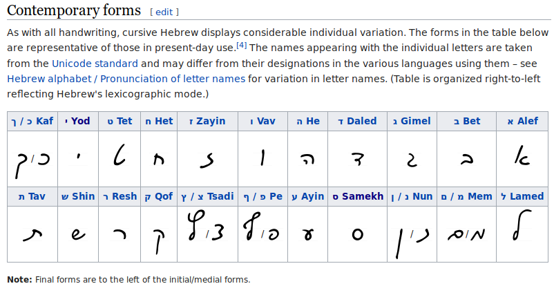
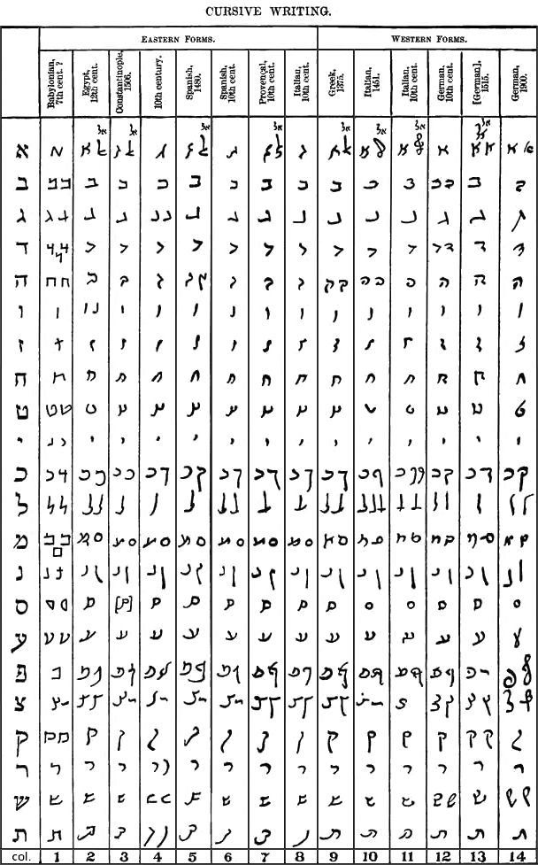
ИКЛМН are all forms of alef? what a surprise! (Н is N in russian & N is M in modern hebrew cursive)
once again, I missed a thought:
ه often looks like e, and in alphabetic symmetry ه
stands where e does. though eee looks like ههه
but also M looks like that: م
Мmm looks like that: ممم
Which made me think "what if there's some symmetry between م & ه ?
and this path brought me to the following representation:
a b c d
e f g h ѳ I wonder what happens if they start transliterating ה as e & ט as ѳ
i j k l
m n ס I have no idea how to transliterate ס so that it's not mistaken for neither c nor s.
o p q is it true s and s is actually ш?
r s t I just thought h was ш
I wanted to reflect m to e but ended up with breaking 6-literal lines into 3s
(well, it's very christian and it could stand for 6 being jewish or satanic, and 3 being of triunit theme)
3-unit is thiangle. That A & 𐤀 could stand for it, but the thought was that ا is one and א shows solar swastika, which make that figure not man, but god. And here again pronouns collapse (or do they merge) with deities. (I & I where one is me, and the other is god) it explains why A looks like masonic pyramid. and 𐤀 does keep this slope, and is that curve a ray of light? and what is modern cursive hebrew? further decay of that glyph or something bigger than mere mistake? are they axis of the earth & crescent? 謎です
ה ו ז ח ט
י כ ל
מ נ ס
ע פ צ ק
ר ש ת
this was the thought: if M is vowel, N must be labial
and though I can even imagine that ש is acually W
which would correlate to english wh standing for russian шо & че
third row still doesn't have a labial and if I proclaim כ similar to M, for it looks like פ & ב
(for かか [kaka] is mama and look what I just found: かぞ [kazo] is father)
but I still can see if this hypothesis is anywhere near being valid by trying to build its axial symmetry:
ב ג
ד ה ו
ז ח
ט י כ
ל מ נ
ס ע פ
צ ק ר ש ת
sortah, but
nah, not really.
technically yes, but no
刀/刂 (かたな, トウ) sword
かたな is japanese word, トウ is chinese (it is dao in chinese)
as if 刀 is t (see the graphic resemblance to it & ת)
it, tot, bothe are t, the third person, teh final time, last is bothe the final & the previous. past
as if 刀 is t and か is k and then compare k to ᚳ [k (or tʃ)] which is probably the cognate of ᛏ [t] ᛐ (the same t) and ᛚ [l]
ᛐ could be some form of ᛏ when all ᛚ is taken out of it, and
ᚳ [k (or tʃ)] is probably the same k of ᚴ, because in Bornholm there's only ᚴ and I saw it before, when on that very Bornholm stone
You're peopol of the book, I am peopol of the notebook.
notebook is not book. that is the main difference betewwn the two. тетрадь это некрнига.
though seriously note is not, knot, not there didn't ask me it appeared by itself (I wrote it unconsciously) not ais singular of net. here poetic ambiguosity appeared, and it's true poetry for ai is of net
but I was just changing as into is that wasy
not as node.
knot is related to net? knet? тенет! тенёта, род. тенёт, дат. тенётам и устарелое тенета, тенет, тенетам.
for ᚳ is both k and tʃ (ч) t & k are relatives, invariants, the same in a way
as cha & tea are the same hieroglyph. дик & дичь are the same. плачет плакал. Malkovich Novoselic
or a more straight-forward example: Richard & Rick. Why R & D can be the same is another question. They reflect this way in k-symmetry & they're graphically similar. Both could be forms of ᚦ as if R is a binde rune (though in russian it's just Р[r] and they make it with tongue, so it's weird the letter doesn't have it) I am a dyslalic mutant who pronounces it in a european burry way (burry? translator said burry) rhotacism could also be the term though that term has the opposite meaning in t between vowels.
ᛦ is rh?
Ψ is ᛉ? what are those additional greek letters reaaly? all in really is that very all? so many questions..
The list of dyslalias can be a powerful tool to understand what phonologic structures are more recent.
I and Me
male and female egos and gods
Jah and Mater
Je m'appelle d'me t'rei de mati rei от матери реи (земли? геи? до геи ещё рея, реальность)
в русском редуцированная de обрела гласную пред ней: от. Is that от הt? as in japanese o, o!
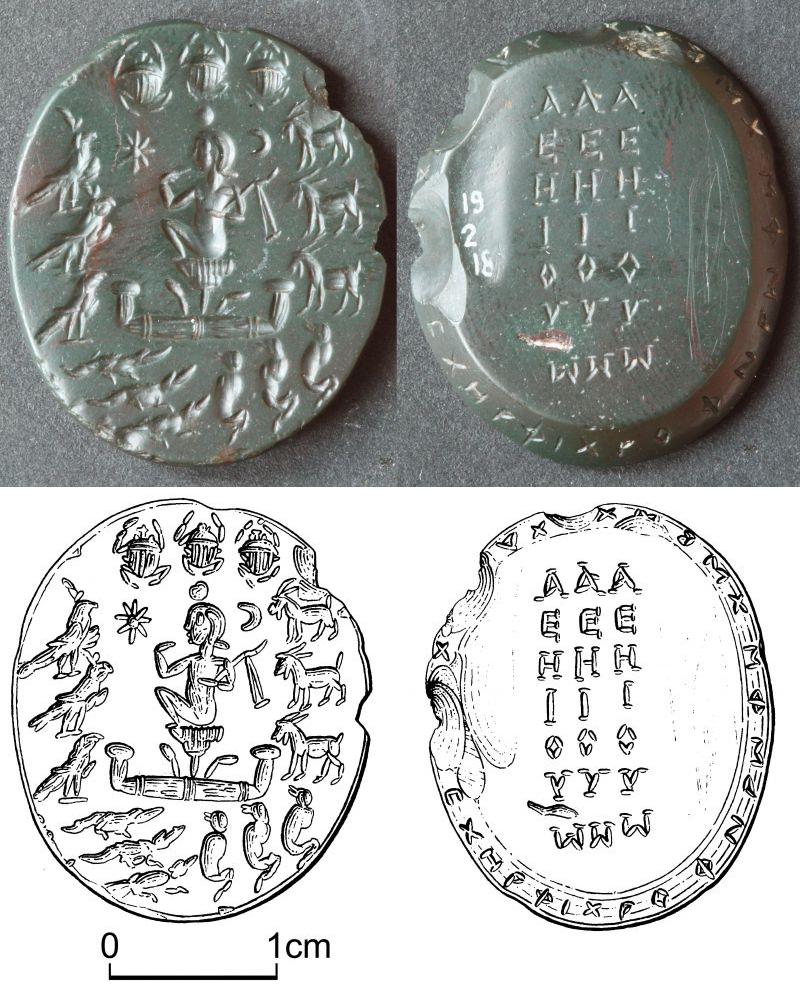 This image represents those 7 greek vowels as a part of the talisman. I only wonder what is the sevens triad on the other side (5 types of animals could correspond the initial 5 vowels, 6th triad could be the celestial bodies, but what's the 7th?) for I noticed triads in them in egyptian alphabet: 3 birds, 3 types of animals, 3 body parts, 3 parts of a circle (whole, half, quarter. and those other forms are in the same relation: a big, a middle, a small) anyway what is the fifth triad in egyptial alphabet?
Russian and English have very similar alphabets, Greek & Latin are very alike.
So how could it happen that they have different understanding of the same symbols?
Why и can be written as u in russian cursive, but и [i]
Why p is read as coronal R in Russi?
Why c is sometimes s sometimes k - but this one is another thing, I think s is a palatalised k ~ h ~ ш
as japanese palatalised s is understood as s by some, but as sh by others, when it's actually sch, щ
(that swash at the right bottom corner of that щ is palatalization of ш - tatar alphabet has more of them.
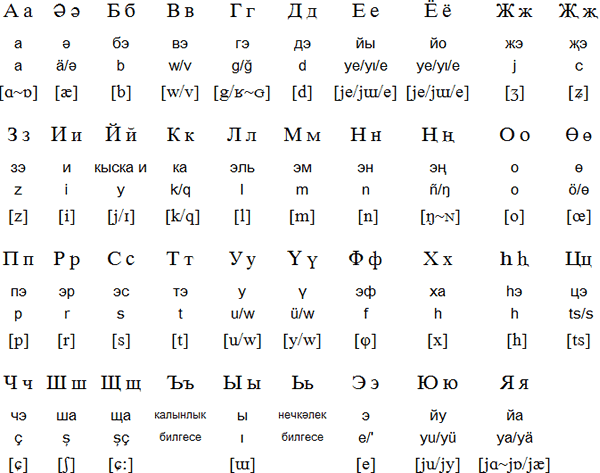
here you can see how clasters tend to group (compare this tatar alphabet to russian, on the base of which it was based) but that is not the only school of tatar alphabet, the following one uses another tradition: clumping them all in the end: (or dumping?, but clumping is even better, a word I didn' know)
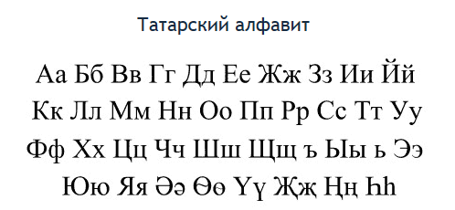
I'm not even sure it's palatalization, just some method to form invariants russians used once or so.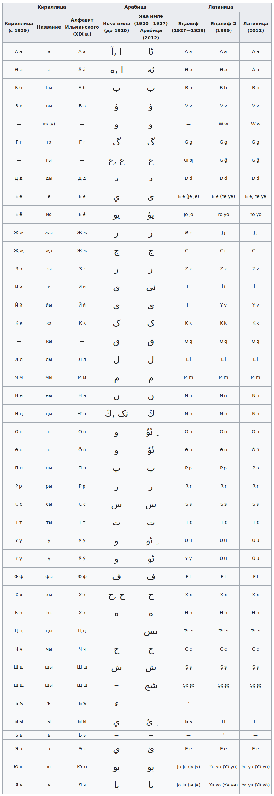
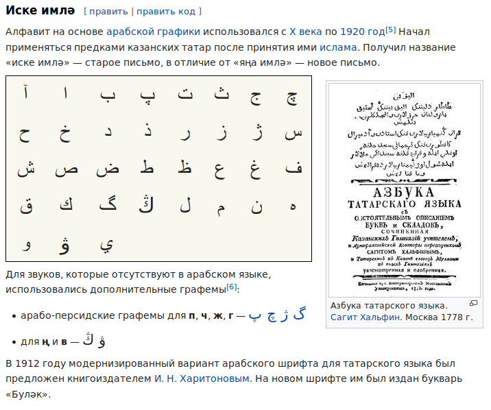
Another alphabet based upon russian alphabet is bashkort alphabet:
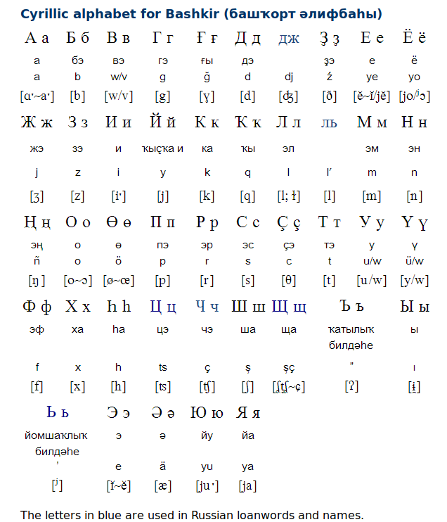
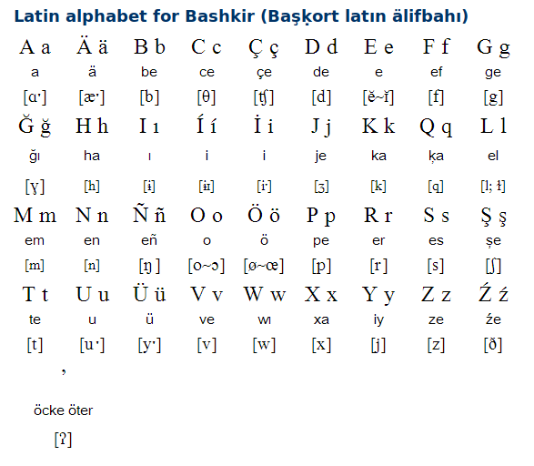
another table of bashkort alphabets existing in different periods of XX century:
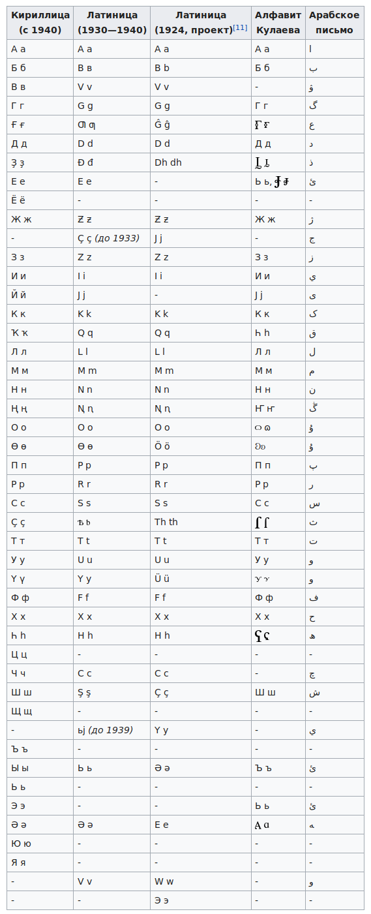
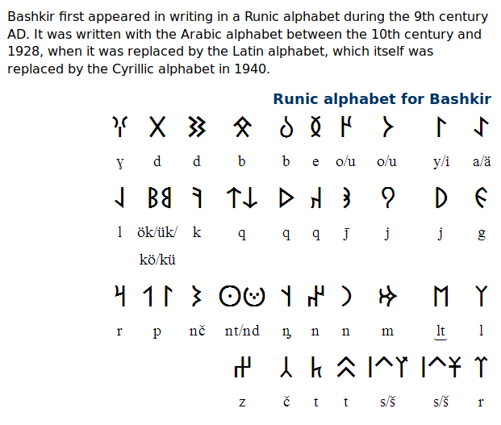
For some time I couldn't figure how k may belong to HIJKLMN cluster other than hikkup is a thing.
Now I can see it's h'
I found it comparing forms of Mike: Mika, Миха, Михаил, Mikael, Michael, ch ~ k
Also returning to that idea of H standing for Ш - more common form of Миха [miha] is Mиша [misha]
I'm crazy. Why? I am crazy! Why? Why is for the future! here I was mad at me because I cut my finger
Greatsy is looking for new ways. Some of those ways are ways off. and I was talking of how we all mad
way is for the future! though being mad damaged or changed my
weg is wil (but I eraseed that typo fest) capabiltiy to think. Why is why for futur?
gilmel = lamel again What is the goal of all these crazy actions?
ג = λ Where are you going with this/ Will you invent the protection
Or you're just bumping around bumping yourself to your grave?
futur is further. Let's create protection from any possible damage. It's concrete spheres
upd: why is not only for the future, but for the context, for the road goas both ways, and if you ask in the past "why did that happen" you ask about the course of events, and they answer with because, which is the same as by course. by is be? War&Peace by Tolstoy = War&Peace is Tolstoy. bi is banks? I was thinking of bystanders so now let's think of bistandards, double standards. standarts in russian they use t there. art stands as standart. etalone
notice how high as the sky I am, my thought travels through my neuronet, catching here & there seekin
Thus will is forward, was is before, would is wood? like if those three or more directions relate to elements of the world, they should correspond. wood is a combination of earth & water, as would is combination of future & past. which is future & which is past? future flows, changes, undefined, past is solid and unchanged as much, uneluding, not dissolved in the sand, which acts as earth in some extent. probably people of the past saw sand as earth without water.. they didn't use withouts. they declared it as earth+fire? let's see it in chinese books:
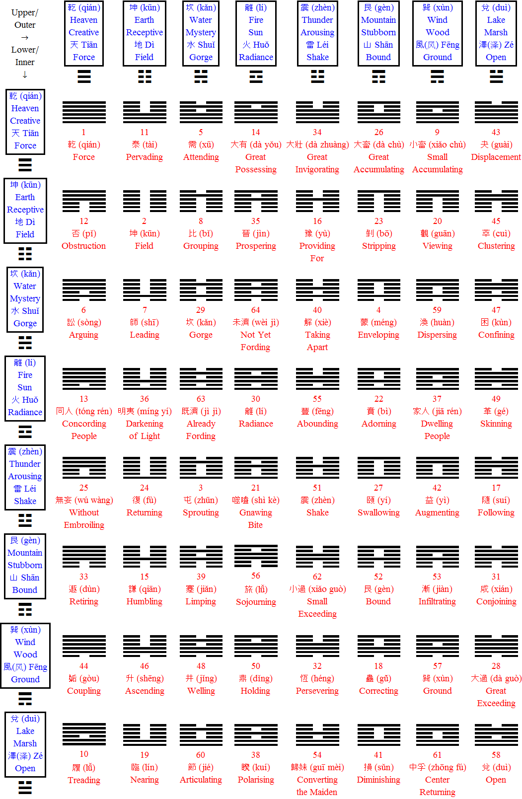
Nope, they're using way more abstract meanings. And speaking of gods as abstractions in the comprehension of the masses, we may ponder on that later, but looking for the sand in trigrams, futile:
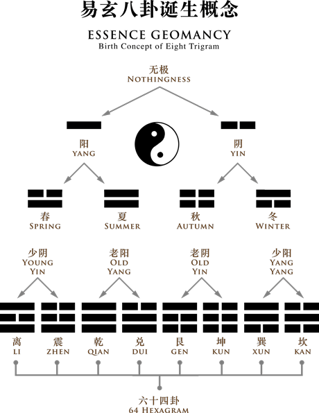
I dare to doubt that summer & winter are not the opposites, Summer & Autumn shouldn't be opposite this way as just bothe monograms switched. I would accept Spring & Autumn as opposites, but not summer & Autumn/ something is wrong here, let's see if it's structural flaw or if that immage is mistaken:

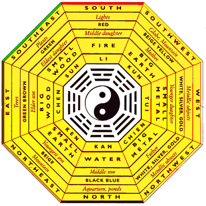
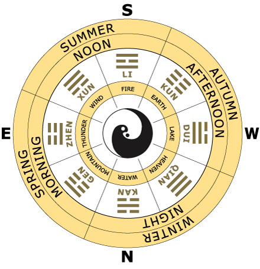
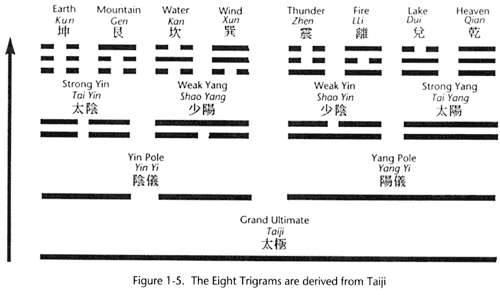
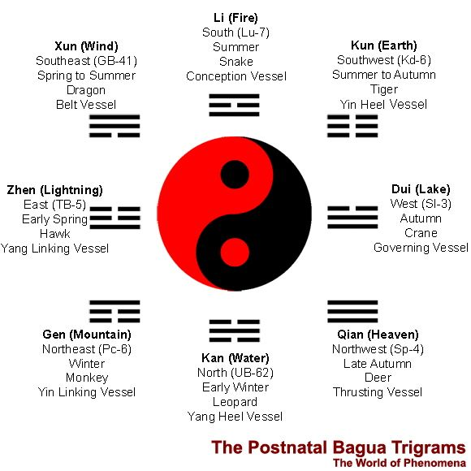
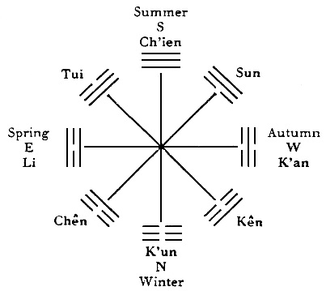
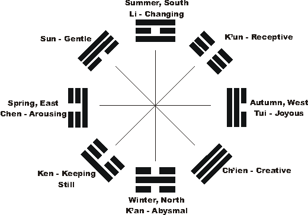
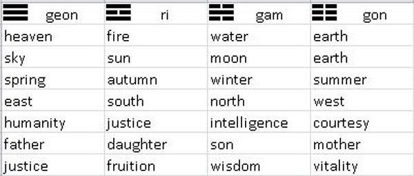

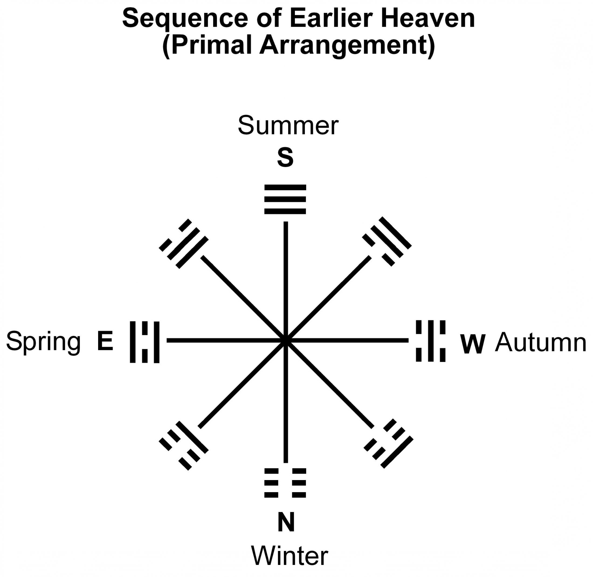
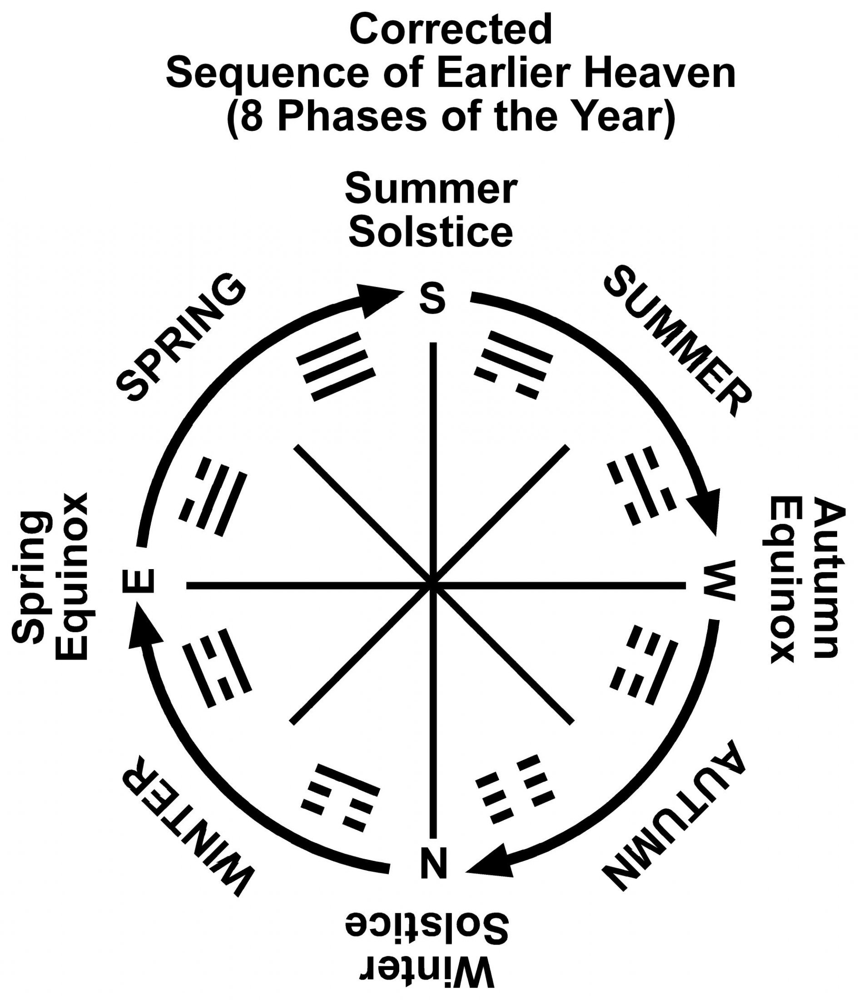
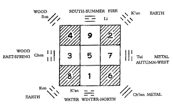
So I searched in chinese for 卦夏季:


And one image told about relation of trigrams to hours of the day, and another one could only tell me what I already knew, but in another perspective, which brought it here.
So for they don't really know what which digram stands for, let's look into that other weird school we stumbled upon in volume I:
dry dead
some branches are dry/ m to g just came, based on the weirdest b ~ g, which is gimel=lamed (upd: it's lambda, and the fact that greeks named their letters in female forms, supports the idea of greeks giving names to their letters before jews (a link to it is somewhere in the text, together with the idea of kabbalah originating in greek culture)), thus double c is B so is it just vertical wave, and b is it's staffed form? (if you don't understand it, I just read it and I didn't get it, skip such pieces freely)
M ? M is B as Л is Г. arewn't they those wife & man? I can see it requires explanation, maybe later.
then double Л is М and double C is B and Aᛒᚦ is ABC and D as an invariant of C, it's staved form.
That is why g is G in endlish, but D in russian. G is a voiced form of C. See, roman alphabet is latin as later for it explanes its form way less than runes. And did I say that clueless child will find runes more archaic than even archaic latin. I use archaic instead of old which is entangling text for non-specialists, which is a standart academic symptome originating in a bigger influx of second-language writers.
double Л is М as double C is B
ᚦ is a male strike with an axe. and in huntrit (let's call hunters' taal this way) it's man leaves such marks
ᛒ is some more information, in one blow weak man (arms as wigs) cannot do. Wig man is wicked witch
so have we found the woo root in woman, wife, femakle?
imagine how rude other words for stereotyped categories can be. Nigger is tabooed as we speak, but it only means black in german.. isn't it schwarze? swarzenegger is black пахарь.. black plowman, ploughman, plougher. Pflüger. what is negger really? I was brought about with that concept that schwarzenegger is чёрный пахарь. что было бы странно, учитывая что африканцы не слишком-то пашут, у них и так всё растёт. и египет переводят как чернозём ложно. это на арабском может египет = африка = чёрная земля (земля чёрных) - но возвращаясь к шварцу (который негрь (уголь? несгоревший или негорел.. негрила.. не горилла? )) we humans will probably have to leave these old words away. and leaving in capsules we'll have some other features (may them be good) and gender and ethnicity will be the least of them/ Niger is a name of an african country, so my rude etymologis can be more offensive than the actual ones, but that's how it is heard and subconciously understood, so I don't know if Niger is a word of some african language, but it could be caught out of their language pool for being recognized in some european language wrongly but with a fun banter.
ᚠ ᚡ ᚢ ᚣ ᚤ ᚥ ᚦ ᚧ ᚨ ᚩ ᚪ ᚫ ᚬ ᚭ ᚮ ᚯ
ᚰ ᚱ ᚲ ᚳ ᚴ ᚵ ᚶ ᚷ ᚸ ᚹ ᚺ ᚻ ᚼ ᚽ ᚾ ᚿ
ᛀ ᛁ ᛂ ᛃ ᛄ ᛅ ᛆ ᛇ ᛈ ᛉ ᛊ ᛋ ᛌ ᛍ ᛎ ᛏ
ᛐ ᛑ ᛒ ᛓ ᛔ ᛕ ᛖ ᛗ ᛘ ᛙ ᛚ ᛛ ᛜ ᛝ ᛞ ᛟ
ᛠ ᛡ ᛢ ᛣ ᛤ ᛥ ᛦ ᛧ ᛨ ᛩ ᛪ ᛫ ᛬ ᛭ ᛮ ᛯ
ᛰ ᛱ ᛲ ᛳ ᛴ ᛵ ᛶ ᛷ ᛸ
That theory of axe-taal I just brought equalizes ᚦ to ᚴ which is ocay because A is ᛆ
and ᚲ is a staveless ᚦ, for double ᚲ is ᛃ and ᚭ = ᚮ as that futhark chart declares. which makes boustrophaedon possible but makes ᚿ [n] equal ᛆ [a] and what about ᛐ(ᛏ) [t] and ᛚ [l]? Well these two could be related, for even in latin minuscule t looks like a dashed (dotted?) l (not in this font, in cursive) ᛲ & ᛋ are shin & sin, invariants. So what about ᛆ [a] & ᚿ [n] ? Initial a can stand for no, but what about the phonetic difference (first I wrote it dicfference, but now I decided to cut off the typos. Thinking about what it means to be crazy, I found that some ways are to be cut short. Typose are one of those things. I still leave them, whatever.
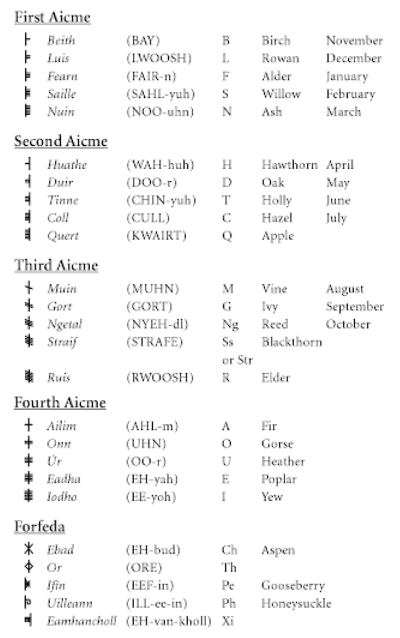

Today academia.edu sent my way this work: Alphabet or Abracadabra? Reverse Engineering The Western Alphabet. by Wim J Borsboom (mirror) Which is an independent discovery of the same structure. And if before I made my best to avoid reading other books on the subject, to keep my research as independent (and from the mistakes of the other authors) as possible. Recently I have felt myself way more confident and began spray-buying books on history of writing systems. And nobody seemed to see the obvious symmetries of vowels. The best I could buy is a collection of writing systems of the world without much of describing, but who really needs it on paper when it's hypertexted in the internet. Where you can also find some freaky fellows pulling texts in one language to another (though if we, russians, read texts of older than five centuries we have problems understanding it) so my task is to collect all the primal words, to compare the most simple of them, to understand the phonetic liberties those words allow and if something other than white noise emerges out of that venture, we reconstruct the following language from that scratch.
And the fact that this guy makes his research from scratch is an evidence of this field being just new born. Or I would never heard about him if there was no internet, so who knows how many independent researches like him managed to see AEIOU structure. It's so much in your face sometimes, but people just can't see it, it stunned me when I first witnessed it - as they say, there are those who see, those who see when you show them and those who don't see. And it's tremendous how many of people don't see. Those proverbal 95%.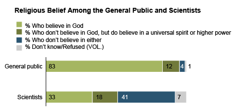 And thus only few of us can see. So all the science is probably carried by those 5% of people who can see when they're shown. But of course even in scientific community they're in minority. Or am I just getting too counterproductively bitter? For I know that some smart people believe in god for whatever reasons, just as many not so bright people believe in god for some wrong reasons. The same people who believe in god living in russia
used to be atheists while they were living in ussr
Wim J Borsboom uses the following image:
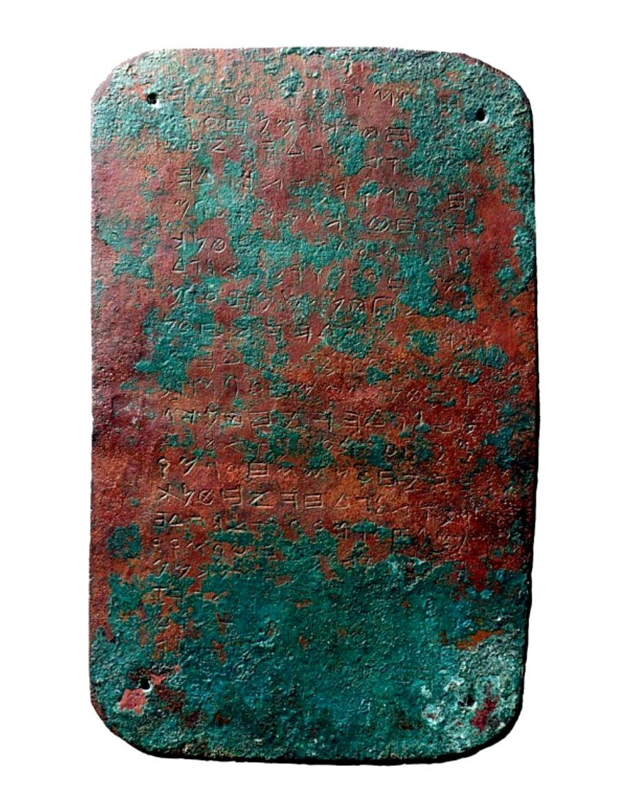
Which I missed not recognizing abecedary in it, leaving it for later when I speak greek.
But it is an abecedary, a plane from a set of four.
But while I was looking for other three, I found an opinion that it is a forgery:
http://preearth.net/phpBB3/viewtopic.php?f=14&t=1181 (mirror)
whether you accept or deny their arguments, it's quite a vault of information on the subject and a rabbit hole I maybe will descend further. But because forgeries are possible, I wanted to focus on modern forms of writing systems (for these symmetries were found in them, so I can research it further using only modern material. But public wanted me to look into what historical linguistics tells on the subject, even though it doesn't actually speak much (and half of that is false, alas))
Wim J Borsboom brings the term Varga to the table, and gives an interesting guess that difference in eastern & western order of writing systems could be caused by those vargas (labial, velar, coronal) misarranged by a traveller who brought them to the west on separate tablets. (he also was confused by some common misconceptions of consonant alphabets & medieval origin of minuscule, which I debunked earlier, so I'll give him a link to this part, so he can patch his approach) which is another explanation of that switch, that it was not by some religious reasons, but by mere accident (which I doubt, because of the reasons I gave before (greek Z for Zeus replacing Θ for Θεά as one of them))
He derives alphabet from India, which is understandable, for hindus do recognize vargas (I'm not sure it's the correct form, I only found it in astrology, but he studies sanskrit, so he probably knows it better) while in western tradition this knowledge seem to be completely lost and only rediscovered here & there and hopefully somewhere else (followin part of this research will probably include more guys & gals excavating these corpus of human concepts)
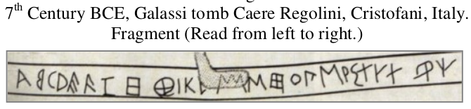
Another image from his work:
brought me this artifact:
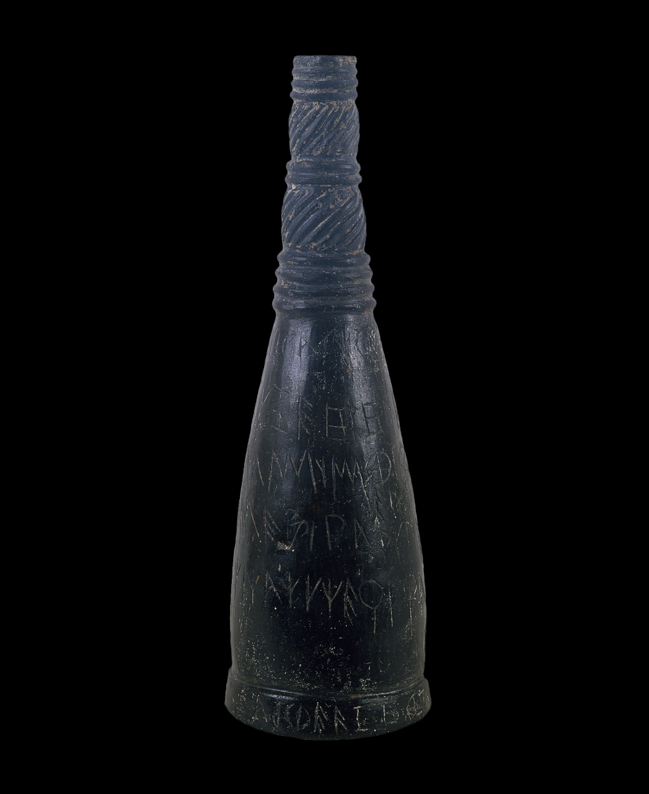
with these writings related to it:
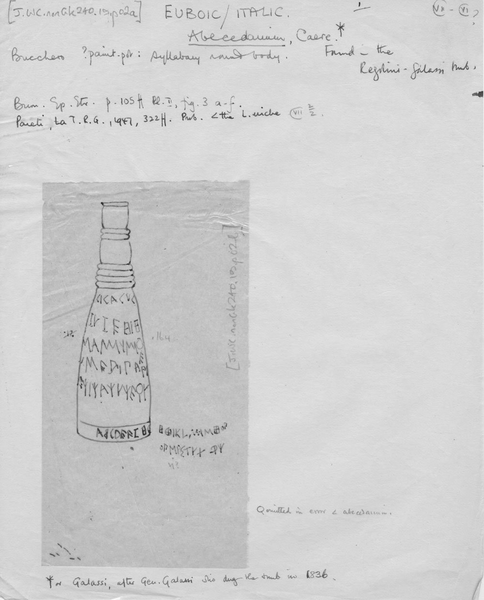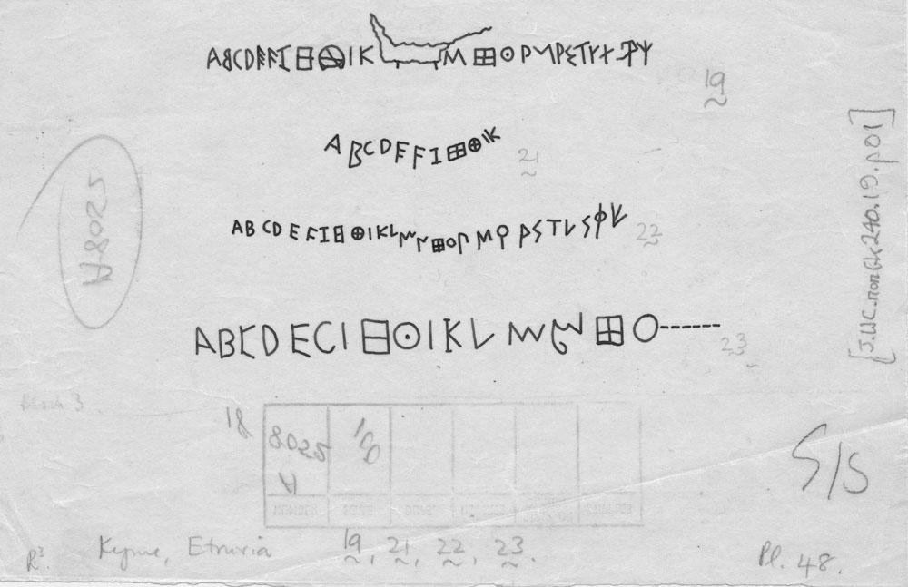
I can only guess how the other three lines are related to it. Probably some scholar just compared them.
Where I took it (images are clickable) it said:
description: Bucchero bottle from the regolini-galassi tomb, Caere
catalogue number: 780
LSAG reference: 240.19
date: c. 650 - 600 ?
object type: Bottle
region: WC
sub-region: Euboic Colonies, Italy (Chalkidic-Eretrian)
archaeological context: Caere
publications: Buonamici, Epigrafia Etrusca pp. 104 ff
local script: Non-Greek (Etruscan)
inscription script analysis: not available
transcription: α β γ δ ε ϝ ζ h θ ι κ λ̣ μ̣ ν̣ ξ ο π Μ ρ σ τ υ χ φ ψ Ϻ, not M, those academics! lol i'm mad
I brought this bottle here only to satisfy my urge to collect all the abecedaries in one place (though I hope somebody does it better and before me) and mostly because it represents inverted B, which caught my attention in roman cursive b () and egyptian 𓃀 (though of course it could be just a scribo, for only right-to-left etruscan seem to write it in reverse. (but once again, who knows if it's forgery or not) though I only know it by looking at what google shows me)
{kind=link}
I think some good ai should look into what that guy could find for of course I am biased to see clearly what he reconstructs (I read it researching so my head got tired when I got half through it, and then I read some more, though I told you not to. And I also typed all these (from "Today academia.edu")
I also shall return to that reading mostly to understand what prevented me from comprehending his argumentation to maybe understand what prevent most of the people from comprehending mine.
Ϻ is san, such an old letter, like jewish צ for it stands there somewhere. But it looks like W, which as Ш
Σ does look like Ϻ rotated counter-clockwise. but it stands at another position, phonetically ~ the same
Ш stands even further. It's like those three forms are spread through the alphabet on some distances:
Z is the opposite of S (probably that's why they needed another stroke on Σ to rotate it into З. is it 3?
ЗΣϺШ such is the order of this abugida. Was it why they had to move Z closer to the E, to make intervals equal? are they equal? we'll check it in a moment.
Isn't E itself rotated Ш? Maybe as 2 mothers of three.
Then there should be 4 of them (one is hidden, as Y from UVW)
What is the third first? M!
З [Z] must be the fourth. twice more linguals than labials!
ЗШ are ZH of the greek alphabet?
E is in the same line!
F, f? or Θ, θ? (I was looking for the labial, and both letters which are left are labial. was it an attempt to make the count even?
like if linguals are doubled, let's double the labials too? thus MN? PQ bothe N & Q are still linguals, but they could have that M pronounce to them, so could russian юсы & french nasals be of that origin?)
We russians we didn't care if it was Ff or Θθ, we drew both as Ѳѳ and draw as Фф today. Θεά is Фея
(I think I should notice that more usually (for more modern words) they use Т instead of Ф
Θ looks like ט in jewish alphabet. And ט is recognized directly as T. Θ is taught to be T in universities.
So second row in greek is three mothers? and fourth additional one. And somethimes there are 6 of 'em
Then every other line is three mothers.
We saw it in ABC (ᛆᛒᚦ shows that ᚦ is bothe c & d: staveless ᚦ is ᚲ. Oh I have some nerve! It's freaky)
ᚦ standing for both d & D shows that boustrophedon is possible. As we saw it before I think in this tome
ᚦ (þ probably is [θ] in icelandic but Δ is [ð] in greek. was it the exact pair how linguals doubled in voiced & voiceless? For M & W are always M & W then F is V? no, there was not W when F was V for it was the W, as they transcribe it in phoenician. But do they translate it correctly? I should really sustain modern writing traditions, restraining from ancient reconstructed ones, for mistake is always there just as here I probably make many;)
one of them could well just be coming up. take it as poetry., etymologic dictionaries have mistakes too.
Is "to die" like an euphemism? Like "to dye" like with your blood. And even if you fall, bleed somewhere else, don't dye the furs of tiger, mammoth or whoever gotcha. Or whatever they wear, like not to smell of blood, not to disturb the animals, not to let them smell you. So hunters wore furs initially just to cover their smell with smell of that animal whose skin they put upon? To steal u stealthly. It's a horror bably, the ancient horror of stealing cubs wearing their mother's skin. boy, wicked.
See how baby is related to babble. babbling babbly baby babé
Dubious? Maybe. But it will help foreigners to never forget the word babble. Petersonian truth, huh

those russian flags, meh, I should start using memeflags, as a protest agains russian government supporting commie regimes across the globe, for themselves secretly being a commie regime.
They have some nerve, or they just didn't read Milton Friedman scientifically proving that the less state intervenes the economy, the better is the economy. He did it through centuries & continents, but I onlly read some of his short ones when I was around 17, and I got it instantly, because I had the bright example of soviet economy before me (don't trust their propaganda or statistics. numbers for 1983-1988 were published in 1982 (I don't remember the exact years, they depend on their five-year plan. So they published digits they planned to achieve, but as far as I know, not a single plan was fulfilled)) though if I didn't read or heard of his research, I would think soviet decay was caused by discouragement of initiative & free enterprise, but he made even broader conclusion, I think he's right, because in today's beautiful russsia of the future government doesn't prohibit free enterprise, but they regulate it to near-death and those regulation are also corruptly arbitrary which actually can be both good and bad for any special case, but it's all not helping the common economy, au contraire.
The translator used double negation, but you've got the point
And though these things may be more important than what we research here, there might be some political games, but luckily not for long. Their service is no longer needed and will be substituted with ai-powered society of free entrepreneurs. or maybe we all won't even have to hustle for entrepreneurs among us will take care of communities around them, providing free place & power to create our own food by printing them, while those entrepreneurs' ais would be surveilling his neighbours via microscopic spy-drones that nobody produces too much of explosives or doing some other dangerous stuff. and thus those entrepreneurs would be watching eachother, keeping their surveillance in open sometimes, so everybody is watching eachother and hivemind whatever challenge they're facing, so no big daddy or big brother is needed anymore. It's not even that much of the future, it's the present unfolding in front of us.
OPRST (as it is in russian & greek)
Greeks used to have Ϻ where lating has Q and in variants closer to phoenician, also Ϙ after Ϻ
These addditional letters made sense for together with Ϝ it addded alphabet up to 27 which was 9+9+9, which was their numeral system of 999 similar to roman numerals because both had cycle in 1000.
I wrote about it before, they used overlines to multiply numbers by powers of 1000.
So they didn't even need sampi, which makes me think hm.. have sampi (ϡ) ever existed? Isn't it San sent to the back of the chart as they did to many other letters? And the following image says ϡ could be exactly Ϻ, and another one tells that Ϻ could be exactly Σ:
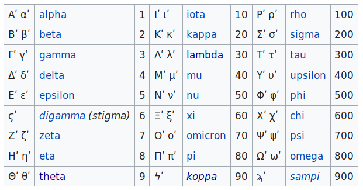

Sicyonian is from Sikyon:
AEOLIA has to be special. It consists almost completely of vowels, and their order is AEO, very alphabetic.
IONIA also includes only one consonant, but Aeolia has more of them, and L is somewhat more vowel, even though N looks like И & H is its invariant is vowel in greek and И used to be H.
L looks like I though. Ionia & Aeolia are such similar names, as if they are dialects of the same thing. Like yea, they're both greek dialects. But how could Ionia be even not in Athen's, but in Anatolia, how could its dialect become the official one?
Though I see explanation in the comment to that image:
But the first attempt to find this book brought be some Cambridge book for £64.99 and with no Kirchhoff. All this is so tiresome. Next search brought me 1 Used from $38.92 + about the same price I will have to pay to putin's post-office. Thanks, but no thanks. https://reader.digitale-sammlungen.de/de/fs1/object/display/bsb10585083_00037.html (mirror) and that lawyer world makes us all lie Ja to
Ich versichere, die Nutzungsbedingungen gelesen zu haben und die heruntergeladene Datei ausschließlich für nichtkommerzielle Zwecke zu verwenden.arrowNutzungsbedingungen (Europeana Rights) for something older than 150 years for fuck sake! Maybe some day I know german and read it.
And Ϻ and Σ are indeed invariants:
San (Ϻ) was an archaic letter of the Greek alphabet. Its shape was similar to modern M, or to a modern Greek Sigma (Σ) turned sideways, and it was used as an alternative to Sigma to denote the sound /s/. Unlike Sigma, whose position in the alphabet is between Rho and Tau, San appeared between Pi and Qoppa in alphabetic order. In addition to denoting this separate archaic character, the name "San" was also used as an alternative name to denote the standard letter Sigma.
(this smaller text is quotation from somewhere seemingly reliable, reading references is a whole another research I don't feel like doint gon, we... doning now doing nowdoing now:
wiki where I found it doesn't give reference for that very paragraph, but it has a history of edits:
San (Ϻ) was a letter of the Greek alphabet, between Pi and Qoppa. It had a phonemic value of /z/, but eventually became disused in favour of sigma. The latest attested use is in the 6th century BC.
San was a letter of the Greek alphabet, between Pi and Qoppa. It had a phonemic value of /z/, but eventually became disused in favour of sigma. The latest attested use is in the 6th century BC.
San was a letter of the Greek alphabet, between Pi and Qoppa. It usually had a phonemic value of /s/, but eventually became disused in favour of sigma. The latest attested use is in the 6th century BC. It was also used in Arcado-Cypriot as [ts], replacing a previous labio-velar before a front vowel, where other dialects replaced it with Tau.
San was a letter of the Greek alphabet, between Pi and Qoppa, corresponding in position although not in name to the Phoenician tsade. It usually had a phonemic value of /s/, but eventually became disused in favour of sigma. The latest attested use is in the 6th century BC. It was also used in Arcado-Cypriot as [ts], replacing a previous labio-velar before a front vowel, where other dialects replaced it with Tau.
San was a letter of the Greek alphabet, appearing between Pi and Qoppa in alphabetical order, corresponding in position although not in name to the Phoenician tsade. It usually had a phonemic value of /s/, but eventually became disused in favour of sigma. The latest attested use is in the 6th century BC. It was also used in Arcado-Cypriot as [ts], replacing a previous labio-velar before a front vowel, where other dialects replaced it with Tau.
San (uppercase Ϻ, lowercase ϻ) was a letter of the Greek alphabet, appearing between Pi and Qoppa in alphabetical order, corresponding in position although not in name to the Phoenician tsade. It usually had a phonemic value of /s/, but eventually became disused in favour of sigma. The latest attested use is in the 6th century BC. It was also used in Arcado-Cypriot as [ts], replacing a previous labio-velar before a front vowel, where other dialects replaced it with Tau.
San (uppercase Ϻ, lowercase ϻ) was a letter of the Greek alphabet, appearing between Pi and Qoppa in alphabetical order, corresponding in position although not in name to the Phoenician Tsade
The Phoenician or the Greek letter was loaned into the Old Italic alphabets (𐌑, transcribed as Ś), in the archaic Etruscan alphabet retaining its M-shape but from the 6th century BC changing its aspect to a shape similar to that of the d-rune ᛞ.
San (uppercase Ϻ, lowercase ϻ) was a letter of the Greek alphabet, appearing between Pi and Qoppa in alphabetical order, corresponding in position to the Phoenician Tsade
The Phoenician or the Greek letter was loaned into the Old Italic alphabets (𐌑, transcribed as Ś), in the archaic Etruscan alphabet retaining its M-shape but from the 6th century BC changing its aspect to a shape similar to that of the d-rune
San (uppercase Ϻ, lowercase ϻ) was a letter of the Greek alphabet, appearing between Pi and Qoppa in alphabetical order, corresponding in position to the Phoenician Tsade
The Phoenician or the Greek letter was loaned into the Old Italic alphabets (𐌑, transcribed as Ś), in the archaic Etruscan alphabet retaining its M-shape but from the 6th century BC changing its aspect to a shape similar to that of the d-rune
oh, at last, a reference, but it's dead there, and it's probably nothing. And it's only 2003 to 2007, this random discussion, a scientific discussion, because editiors could only read it in more or less scientific literature, and everyboy who knew anything about it could have its say. Imagine giving references to the fact that S sounds as s. I probably wouldn't. But if you read that M sounds as s, I would like to see some reference to that. What book does say about it first? In what text, ancient or modern is it used this way? Probably some greek dialect used it and thus they recognized some ancient abecedary in the way, but then I would liike to look inside that dialect and why could that ever happen that M's mistaken for Σ
M stands above S in roman alphabet and above Σ in greek too and where romans had Y, greeks used Ψ.
But let's procede with this experiment, omitting some minor edition (some1 put lent instead of loaned)
notice how 1(one) and l(L) are almost the same. as if 1 is il, el, al
So I go on, and thought I never heard of Tsan, there's another line about it:
The Tsan variant has a glyph identical to the Pamphylian Greek digamma, U+0376 U+0377, which is scheduled for inclusion in Unicode 5.1.
I couldn't find pamphylian alphabet, but I brought you Lycian:
Mostly to show how much some of its letters remind runes.
and that lycian omega surprisingly reminds northern paleohispanic m.
as they're quite different phonetically, I suppose some semantic calque, like Ma & Она
and I continue observing how one wiki article grew with time:
San (uppercase Ϻ, lowercase ϻ) was a letter of the Greek alphabet, appearing between Pi and Qoppa in alphabetical order, corresponding in position to the Phoenician Tsade
The Phoenician or the Greek letter was lent into the Old Italic alphabets (𐌑, transcribed as Ś), in the archaic Etruscan alphabet retaining its M-shape but from the 6th century BC changing its aspect to a shape similar to that of the d-rune
San (uppercase Ϻ, lowercase ϻ) was a letter of the Greek alphabet, appearing between Pi and Qoppa in alphabetical order, corresponding in position to the Phoenician Tsade
The Phoenician or the Greek letter was lent into the Old Italic alphabets (𐌑, transcribed as Ś), in the archaic Etruscan alphabet retaining its M-shape but from the 6th century BC changing its aspect to a shape similar to that of the d-rune
The obsolete Greek letter sampi (ϡ = 900), either derives from or was influenced by san, both having similar phonetic values.
San (uppercase Ϻ, lowercase ϻ) was a letter of the Greek alphabet, appearing between Pi and Qoppa in alphabetical order, corresponding in position to the Phoenician Tsade
The Phoenician or the Greek letter was lent into the Old Italic alphabets (𐌑, transcribed as Ś), in the archaic Etruscan alphabet retaining its M-shape but from the 6th century BC changing its aspect to a shape similar to that of the d-rune
The obsolete Greek letter sampi (ϡ = 900) may have derived from san and both represent similar sibilants.
And then it was reedited in some other form, so I stopped following
and I looked at the comments of those editors instead, though they still don't give references, it's still rather informative:
merging "Tsan" stuff back in here, seems to be widely held consensus in the literature that it's essentially just a San variant
Also since then tsan was called arcadian, and not arcado-cypriot.
and that (the same San) article has several references, probably I should read them if I want to research this topic properly.
Ͷ ͷ (this letter has some other interpretations, and some other letters look like that: И & 𐐥)
I am russian I learn all the time, yet I never knew Ͷͷ or that digamma can look like this
Ͷ
• (Ś) (upper
case, lower case ͷ) (Arcadocypriot)
tsan,
denoting an alveolar ejective affricate; its
sorting order is not known Synonyms (Arcadocypriot tsan): Σ̱ (S̱)
I'm lazy to mirror links, I put a piece of that right here:
(I must mirror all the links for whatever reason)
Arcadian "Tsan"
A unique letter variant, shaped  (similar to modern Cyrillic
И, but with a slight leftward bend)[5]
has been found in a single inscription in the Arcado-Cypriot
dialect of Mantineia, Arcadia, a 5th century BC[2]
inscription dedicated to Athena Alea (Inscriptiones Graecae
V.ii.262)[6][7]
It is widely assumed to be a local innovation based on San,
although Jeffery (1961) classes it as a variant of Sigma.[5]
It appears to have denoted a /ts/ sound and has been
labelled "Tsan" by some modern writers.[6]
In the local Arcadian dialect, this sound occurred in words
that reflect Proto-Greek */kʷ/. In such words,
other Greek dialects usually have /t/, while the related
Cypriot dialect has /s/. Examples are:
(similar to modern Cyrillic
И, but with a slight leftward bend)[5]
has been found in a single inscription in the Arcado-Cypriot
dialect of Mantineia, Arcadia, a 5th century BC[2]
inscription dedicated to Athena Alea (Inscriptiones Graecae
V.ii.262)[6][7]
It is widely assumed to be a local innovation based on San,
although Jeffery (1961) classes it as a variant of Sigma.[5]
It appears to have denoted a /ts/ sound and has been
labelled "Tsan" by some modern writers.[6]
In the local Arcadian dialect, this sound occurred in words
that reflect Proto-Greek */kʷ/. In such words,
other Greek dialects usually have /t/, while the related
Cypriot dialect has /s/. Examples are:
- ИΙΣ (cf. Attic τις, 'somebody')
- ИΙΝΑ (cf. Attic τινα, 'somebody')
- ΟИΕΟΙ (cf. Attic ὅτῳ 'to whomever')
- ΕΙИΕ (cf. Attic εἴτε 'either')
From these correspondences, it can be concluded that the letter most likely denoted an affricate sound, possibly [ts] or [tʃ], which would have been a natural intermediate step in the sound change from */kʷ/ to /s/.[2] The letter has been represented in modern scholarly transcriptions of the Mantinea inscription by <ś> (s with an acute accent) or by <σ̱> (sigma with a macron underneath).[6]
(A distinct epichoric letter that shared the same И shape with Arcadian Tsan but had the unrelated sound value of /w/ existed in yet another dialect, in Pamphylia. It is conventionally known as "Pamphylian digamma", i.e. a variant of Digamma or Waw.)
Sampi (Disigma)
The Ionian letter  , which later gave rise to
the numeral symbol Sampi
(ϡ = 900) may also be historically related to San, although
it did not have the same alphabetic position.[8]
, which later gave rise to
the numeral symbol Sampi
(ϡ = 900) may also be historically related to San, although
it did not have the same alphabetic position.[8]
2. Woodard, Roger D. (2006). "Alphabet". In Wilson, Nigel Guy (ed.). Encyclopedia of ancient Greece. London: Routldedge. p. 38.
5. Jeffery, Local scripts, p.212f.
6. Nicholas, Nick (2005). "Proposal to add Greek epigraphical letters to the UCS" (PDF). Retrieved 2010-08-12.
7. "PHI Greek Inscriptions: IB V,2 262". Retrieved 2010-08-12.
8. Jeffery, Local scripts, p. 38f.
Okay, it's not my book already, I give references to books I never opened, but I just copied references of what I copied here. I never saw anybody did it (though they just didn't tell me, they copied references from the book they read, even if they didn't read those referenced books. I think hyperlinked text is better than list of references, more user-friendly, new.
Also links to public domain works instead of corrupt academic references easily puts me aside, as I wanna be, move along, это не для вас написано.
I think it's time to take a hiatus until I have some news. Not to stumble around sans & tsadis.
But I have the news all teh time, I have some in my notebooks, I tried to deliver it here, but I got distracted all the time.
It's about צ ~ Q ~ Ч being the same letter or at least invariants:
San, Sigma, Sampi, could these be 666 of the greek alphabet? UVW is in latin, ъЫь is in russian, probably three ways to read ו is in jewish, for ו is their 6th letter, for ו can be read as v, u, o.
de Vuo? I only know the word vow consisting of these three, and it's a magical word.
Previous boooks ended as christian bible, it's funny that this topic arised as I spoke of ending this
No, lazybones, we're going to keep on going.
I wonder how I never noticed that arabic و looks like roman cursive v.
it would look much more like it if it bound to the letter following to the left of it, but it is one of those letters you're not allowed to bind to the followings. Otherwise it stops being wow or what? probably.
Or just to prevent us from noticing this samenloop. I wrote in english, I wrote in russian. Now I will give way for Dutch. Not only to show off, but mostly to learn it properly, for bog ik zog
way is weg in nederlandse taal. maar boy is not bog, does it make weg less of a way? away is weg too.
say is seg
thus rule shouldn't appear all the time, but it is a tool or event which could take place several times, as if instead of one word some other people loaned a couple of similars and twisted them bothe the samwe
but some similar words are so many that you know those might be the originals, because notheing is more to the core of the language than they are. So they could be even saying more. So sort out the basics from later additions and compare them semantically.
I am a native russian, so I will use russian to find those semes, and after taht I will compare them to other languages. I will see for correlations or whatever comes my way.
аси баси вези гаси дерзи еси ёси жись зисъ ищи коси лоси мощи неси оси паси рощи соси туси усы фасы хоти цвети чади щади
беси весь льсти мости пёсьи рости фаты цеди
it seems like -си is the older version of -ти
(because y-row is the latest)
but do all those older letters have -ти words to them?
аси баси вези гаси дерзи еси ёси жись зисъ ищи коси лоси мощи неси оси паси рощи соси туси усы фасы хоти цвети чади щади
беси весь льсти мости пёсьи рости фаты цеди
бати води гадь дади едь жди зуди иди кодь льды муди надей(ся) пади ряди сади туды уды
гадай лги манди
instead of дади we say дай!
бей вей гадай дай жуй знай куй лей мой ной рой стой а дальше только хуй и чуй
подобно тому как г похоже на что-то согнутое, есть более подхадящее этой букве слово: гни
пни вне гни дни жни знай know лени(сь)? но я имел в виду лини (императив от слова "лить")
(ебани)
мни! нни? является ли этот суффикс частицей не/ни? но я думал это про -си (вези = не в карете)
пни рани сани тани, тяни!
а дальше лишь еврейской фани и хани хны цены. цени кстати! чаны, шаны, но это не глаголы
бесы = бог съехал (съебал если то же самое, да позвонче)
бесишь = быть перестанешь (бога прогневишь. взгляни в начало этой части или конец прошлой, где бог сочетается с жизнью как дьявол со смертию.
это arbitrary, but that is what the culture saw or was
весить = вылазить, свисать. т.е. "не внутри" и видимо лишь в дальнейшем, когда взвешивать стали пружинными весами, подвешивая мясо или мешки на крюк, висеть стало означать и весить.
гаси = огонь сносить (то же с что и в приставке/предлоге с) а г то же что и в гарь, горе(ть) огонь
дась - ни разу не видел такой формы, видел даждь, знаю дать, но именно это слово велело мне изучить ещё более простой суффикс -й, и если -й = -си, то... как мы гуманитарии используем минус это просто непростительное несоответствие, хотя бомжет.. может и информационно для понимания истории этих значков.
дай = нету (т.е. отрицание "да" т.е. констатация факта подразумевала действие и вместо отрицательных преффикосов использовались отрицательные суффиксы, смело и свежо братан)
ей = без смеха = еси
жуй = не жёваное
куй = не твёрдое или не острое, не ки, не меч.. нековано, куй
лей = не мокрое
мой = не мытое
ной = не надо?
пой = не просто?
рой = не рыхло?
суй = не снаружи?
тай = не твердей? дей как форма да, в противовес нет? словно раньше были отрицательные глаголы, а затем новым слоем появились утвердительные?
откуда я это направление взял? just a thought
хуй = не хочу? хуй иногда значит нет (забавно что пизда есть рифма с да)
но мы забыли про -си!
коси = колос снеси
уноси = не надо here's where I recognize bs. why don't I use some monosyllables?
:but I keep on going
мости = чтоб не мокнуть делай!
значит в "мочи" -чи = -ти, т.е. да.
не случайно в японском ч есть форма т, тогда как ш,щ есть форма с
значит -щи = -си
ищи = нету (и = is, но is = есть (exist) т.е. е=и (едА вместо идА и ищИ вместо ещИ - "стилистика")
была М снесена со своего места подобной неаккуратностью, когда я сначала незнаю что про него сказать, но вдруг узрел и добавил
паси (чтоб не пропали)
росы (чтоб не погибли? чтоб не засохли, чтоб не рухнули)
соси (не кусай? шин = зуб, со = зуб?)
туси - это непосредственно мне совет, not to overdo it, to socialize, to be less autistic.
but of course this word is probably rather relative, though even though this word is from youths' slang, it could have much more deeper roots: тусовать ~ тасовать. тусуй! в значении тассуй колоду. похоже на французское заимствование, не тусуй, а тасуй правильная форма, но кто её установил. тусоваться это именно что переходить от одной компании к другой, везде находя старых и новых знакомых. туси значит развейся, снеси этот ту-ту-ду-ду-ту блюз, cheer up!
характерно, что глаголы, что я счёл древними, закончились на т, как алфавит оканчивался раньше
но это фрикота конечно в академически заведениях не простиительная, потому что не все же такие крутые как ты, начнут нести ахинею и стройное-нестройное, какое есть, здание языкознания рухнет под весом собственных противоречий. Так может и не нужно единое здание для всех школ? пусть падают противоречивые конструкции, пусть подобно тому как природа решает такие вопросы выживут самые самые. здание=знание? о...
What is going here and what was just above would be embarrassing for any affiliated researcher.
Good thing I am not affiliated, so I can demonstrate freely how the thought process is happening.
к = твёрдое? камень, кость. даже придлог к подразумевает твёрдость (не в, но к)
тогда кость это именно твёрдая ось, в отличие от хрящей (os = кость. ost = кость in context)
But I remember another interpretation of that -си suffix: as if -си = -ся
then коси = к себе
and неси = на себе
and both of these make some sense, but other words won't support this thing.
doesn't it bother me that si is yes in other languages? It doesn't bother me that bulgarian gestures to yes an no are the opposite of ours. I never really researched if it was true or just an urban legend, but here's an interpretation of mine:
или трясутся, играются у довольствии.
если нет тэла - то как фарфорчик китайский ла лэ
рысски же дрессируют хвыстом.
или изгибают спинку у довольствии.
если нет хлоста - то страшно наверно, трясутся, сътрясно
k & to are the same letter: ᛏ
k is just downwards. or sidewards or what is it? ⏎? nah
K is literally "to" < is <= (arrow & less or equal. before the object or just at it. compare at & to)
>= this one is probably "in" the object, because it's more or equal, which as at it or in it.
що ис ши ин (why did I write ши? in ши это раскладкаю .. могли древние иметь раскладки?
почему одни слова соответствуют другим.::?
= is ровно (равно ис ровно. две равные палки рядом лежат)
драка дразнить
so people of the past didn't see problem that k is z
or is it people of the present pronounce words so poetically carelessly, that linguals go all the ways.
нить (she in chinese or japanese)
ню
нетъ (he (or actually she) in дразнет (дразнит) and НЕ is ne (no) in russian and he in english)
ни
?
these he & she in дразнитъ (if ъ ~ ь then make me think it was the infinite form)
infinite indefinite the same as in infinity, eternity, godliness, purity, so thinking of those кто оскопили себя ради царствия божиего, did they know that male glands (glans) spoil blood after man is 50 or so
I'm a little over 40 and I already feel it (and I read it in Дильман's 4 Mодели Mедицины)
but how could savages of the past know iit? they probably wasn't that savage ((even me is savage)
they could notice something happening with the corpse, what if that thing allowed them not to rot?
unlikely? just as a possible variant. They could avoid rotting by living in draft, but their craft could demand castration as protection from marital bounds with its inevitable retardation.
there's an anecdote: психолог спрашивает пциента "а это как вы сказали потупление случилось с вами внезапно или развилось постепенно в связи с женитьбой и последующим отцовством?"
though I'm not sure this anecdote is not a part of the white genocide.
motherfuckers
what if this distinct from all the incest thing could be a national trait, as cocksuckers could be antisemitic, if it relates to mezizah b'peh
You may think "here he again, why cannot he curve around this thing? who cares, move along! and socially adequate person would behave accordingly, but teenagers misbehave for a reason;
without deviation from a norm, progress is impossible.
or let's respell this cast:
progress is due to change
change makes progress
progress by change
control the change and you control the progress
some changes are made not by us
let's make text of shorter words
a be see do if go hi I key all am me no on in oh pee que are as is os to two
joe is jow, suffixed word then new is among n's
It's funny that it begins with a and ands with two
and now I see where new & cue (queue, que) came from (cue указка, кто именно. или длинное)
new & que came from you. the new vowel.
imkl
because vowel, labial, velar, coronal, as in a & o lines (e & u lines show this structure less, yet they do)
j ~ y ~ v ~ u ~ и ~ n ~ g ~ q
how dows this relate to i?
it relates to f.. weeird, so weird
f as wow, for vov is bothe u & v & o...
but two lines ago I said it because f is digamma, and way ~ weg and g ~ q
but I added ~ n ~ g ~ q only to say that you que new are the same word
you and que I can understand, you show with it at one from the crowd saying you,
but you is plural form. thee is ты but verb form of ты is тыкать. which is related to a cue.
cue = thee?
if к = зн = ж = г
all linguals are the same
at least all the basic, primal, ancient linguals.
n is new. thus g is new thus q is new
what was e-line's lingual if not g?
did e-line exist then?
because there's no velar in a-line of ancient runes (plot all you like but even before I saw that abc-structure of a-line in bornholm stone is more basic than anywhere else (maybe ugaritic u-line, which shows the youth of u-line in comparison to others, which already developed som clasters, and i-line even misplaced M, as they all do. So why do I treat a-line & u-line differently? because a-line is everywhere, u-line is not.
what are these verses? it isn't even poetry, and it is between scientific literature and poetic wanderment,
a new genre. genre is direction (both words are направление in russian) so I whether made poetry more scientific or made science more poetic, or both.
back to those motherfuckers: won't people prefer to reproduce with their parents if science makes it safe? will people make new breeds by these practice? why would you multiply? to make my own tribe. why? what for? to be the king of your castle? can any family demand independence from the feodals? (robot want's to substitute it with federals, lol)
I sperg
Iceberg
just a rhyme, but some semantic similarity ist here
I recently noticed that I live in a region where many tatars & bashkirs & I still hardly destinguish their zur rahmat from rahat lukum
(I had a typo of harman.. harmat there, can it measn anything. not, forget these typos, paitn noise white)
This is because I can recognize russian words in english, but not in turkic languages.
Which makes me believe that nations are divided not only by facial features, but also by language.
And it seems these two characteristics are related to one another.
Finns & Hungarians look more similar to us, so let's approach turkic languages from finno-ugric, for now I test my picture of the world claiming that finno-ugric are closer to indo-european than turkinc.
turkic is tengric? u and en both could be yuses (юсы, nasal sounds)
нос нёс несу несёшь несётъ несёты (т.н. число от несётъ, несёте russian orthography didn't understand grammar)
oh my god, thinking of rosenthahl being european who first opened russian at 16 or so (or did he learn it before, I'm not sure, he came to russia at the age of 16, parents didn't talk russian, but listen to the story) imagine being european living in russia. who will you pledge the allegence? russia or europe? at least some of them are more likely to work in the sake of europe, and at least some of them will be doing it by damaging russia. navos na qotorom groizrostayut drugie narody. so I just explained healthy necessity of nationalism. and if both rosenthal and vasmer were european foreigners, russia lost the first world war. Russia participated in a war against Germany. Little did it know that that war was against both germany & russia. We were allies with Germany before, so Brits seduced us with their awesomeness, so after russia liked french (until the war) so we began liking english, for german we liked before, it was too old-fashioned. And english is objectively prettier, even Swedes speak English more.
So brits used russian public to make russian government change sides, and then they slayed as a traitor.
Rusy trusy. and duracy. two races? true si(la)? If chinese have hieroglyphs almonosillabary, rusi is two hieroglyphs: true & sila
давай проверим это:
но тогда бриты руссы, а руссы бриты. Потому что английский похож на русский больше чем немецкий.
morrow tomorrow (morning is a newer form of morrow, which is still present in poetry)
утро заутро (завтра)
than deutsche morgen morgen (though нутром утром (нутром будущего?) can be synonym of завтрa)
Thus it is a discovery: english is closer to russian, though it's heographically farther)
Ирландцы-шотладнцы к нам ещё ближе (оне произносят р как мы)
произносит1i
произносят2a
so this is the grammatically correct order, i a w (or E? I was thinking of E when I recalled 3 mothers) that a also looks like cursive 2.
i is higher than both a & w, w is the lowest, thus it was written vertically.
IMK(?)
ABC
UVШ
Hooray, I think I just found the 9-letter alphabet, the one which was used for calculation, until they forgot the rule to use strokes above letters to make bigger numbers, as I researched in roman numerals, I suppose it was due to some long period of scarcity, where people had to move and they didn't have many of anything with them. Jewish history could be universal scenario, and it could allow them merge their christian culture with local pagan believes, as if christians enriched them. And it could be happening not only with jewish torah (which remained thus unchanged, while heathens got centralized religion
Русы друзы (друзья) two races brought me this.
ук ~ ж
лукав ~ лжив
горе луковые ~ голе липовое
лук липок? сочен, лущимый (в отличие от несочной деревяшки. несеченой, нечесаной)
эта поэзия омонопэтична ономопоэтична омномном
when I smoked extract of salvia, finally it told me не осквернять храм своего тела непонятно чем
когда я покурил её ещё раз через несколько лет, я увидел белую богиню, спросившую меня
"ты чего пришёл, тебе же всё объяснили" я ей "но ты мне нравишься" она такая (закатя глаза, на 90о отвернулась своими делами заниматься)
закатя закатав
закатывают обае (оба, обе, обои обоим нравятся, обои ободряют одобряют)
So the question is "is this wisdom applied to cannabis?" for if I didn't smoke it, woodn't write this book.
Salvia made me build all that concrete insanity in my flat. And this book is much more.. sane.
Cannabis is not "непонятно че")
My thulean friend told me "на кортах-то не сиди!"
а мы с урала урловатые, угловатые, uglier, wilder
those latter two are nothing but poetry, ingore, ignore
Вокруг города ров с водой. ров is river. (та кто делает ров. рыва)
потому в крутых городах муниципалитет на острове стоит.
So what is russia? it's дружные и грусные, русаки и рысаки и рыськи и лисоньки и росы и леса
depending on pronounciation and dialect
rus is also village in latin. is there no dew (росы) in the city? not as in forest. there can be иней though.
rosia it used to be, roses. rosы (шипастые тоже, шипящие, цчшщ)
who cares what is russia, some part of me wants me to say that all nations must go, but I know that bearded man in gits is russian, how do I know it? am I delusional? I never saw official info on him, but I see my own nwe onw one on archetiype.
wizard is wees art
wees is knows in dutch
how many such transliterated words unrecognized because nobody knows languages
I shouldn't have taken drinks from women, they are all witches, that wi in women is the same as in wim
that guy I met on academia is Wim, and a weird surname, it probably trained his mind in the field of letters, just as mind (mine) did to mine.(to my mind)
That is fascinating that I found his name in female departure, for Dmitrij is also d'Mitrы (official etymology is Demetry (belonging to Demetra, who is Mother deity. dice could be related to this word) Mitra is Mother and she is definitely waking up! (in case you missed that secret level in volume 1, I figured out that Alexander d'Makedonia made greeks shave their mugs to convince them that Mitra is a guy. gay mafia fucked us over, good thing is information wants to be free and they're revealed from all the fronts, though they probably keep some secret trick in the rear. and though they shouldn't care too much for this movements wants to keep them safe and in tact, just off their power structure, you think it is an option? would they crush the civilization to keep this ape status quo instead? what can you offer them? power of gods, but for everyone. even for retards? do you dind find this solution sustainable? I find it can be sustainable if everybody is looking for everyone and taking care of problems before they happen. so we should trace the radioactivity, chemical & biological activity both globally and locally, new forms of human society should be built as multi-level fortresses to ensure survival of human civilization. chances are technologies will find it safer to build underground bases in the martian caves. we have to be prepared to evacuate there or elsewhere, but it's the best option to save life and civilization on the surface of the earth, and second best option is in the underground of the earth and somewhere else, other options are disputable. So why do I consider it possible for shit to hit the fan? Because there's such possibility by default and our task is to prevent it. So why do I want to change the status quo? It's already changed, and keeps on changing, what I offer here is the safe outcome for all of us actually, not for the most but for the special few too. so tell me more gorgie boy, tell me more.)
It's fascinating that I wished to be able to write science fiction, which would take this reality and turns it inside out so you don't know if it's true or not, but the longer you look into it, the more it is true. And now I'm writing this very thing, and it is even better than science fiction, it's a scientific research. And this part speaking of something out of my speciality, what is that? that is not the most insane part of the book actually. And it is probably even more important than the rest of the book inself: if civilization falls, this obscure text is lost forever, unless I print it on some good cannabis paper or on some stone wall deep below where it will be found when they raise again high enough to care about archaeology.
Or is it archaeology? for I just less than a couple of hours ago thought that -sophy is wisdom, while -logy is lies. Yet if it once was true, since after then we got biology which is a very true science, this definition is whether obsolete or never existed. I will return to that civilization topic, it was not the first time I raised it.
We мы - are these female pronouns? Then what would be make counterparts?
I ego (его is third person of the same word, as be goes sideways of am is are, and if orthography confuses you, recognize M S A in them, who are three mothers, and forms of B, which is an invariant of M
What are the three mothers of T?
to? at? tea? tie? none of M S A is B
thus T should be present in some other forms
the? who as Wo? Wo Is I We so B's are verbs, and T are... turds?
Be adn Do!!!
What are the three forms of Do?
Be, being V (beta is actually vita, if historians disagree, these tradition could go forth and back, as ф & θ did) goes in three:
Be aM Was and is Were or Willbe the fourth secret one? Will is probably another word and were is the answer? I should have used quotation mards on those words, but let they be a riddle for your mind.
As if this work isn't complicated enough. Let it be not complicated enough for you. evolve my mam(n)
man is belonging to ma, just as Mitry is belonging to Mutr, -y is -g is -n (more about it later)
wim is probably related to wit & wiz & wink & we may
Mitry is May I Try, a very male thing to say. -le is in that very morphosemantic claster of -y -g -n
not only because lambda looks like gimel, but also because I found other reasons why they're the same, and here male is synonym of man, and -le is such a common suffix (and working in this function) that the sign of suffix is something like ^ which is directly similar to Λ which is L
and forms of L & Λ makes me think of abugidas, where have I saw such a thing other than in ancient greek music? I should scroll my volumes to see if I ever met them somewhere other than in aborigianl canadian sillabary, but L & Λ are the same letter, just as ᚦ & Д are. or even ᚦ & d. bustrophaedon made them equal, or is it some deeper part of the fractal? for b used to look the other way (see roman cursive, or I will rather repeat them here, for I neglet images more and more, that is not as it should have been.
Compare that b from the third line and below. Also notice how D is sibilar to jewish cursive ט.
sibilar instead of similar. oh boy, am I even sue this work won't give me dislexia?
Of course I'm not sure, but I wil definitely find my way out of it.
At least it's a goal. though you know how they say "tell your plans to god if you want to make him or her laugh" for now it seems god knows better, because as for those plans of mine according to which it doesn't happen, reality turns into something even better: I don't build my autonomous house in the woods far away, but I got yes to build it closer to where I actually live, closer to where specialists in medicine and documentaries can be found. And all the other plans turn out into the best possible ways, as one of my best friends say, всё совершается совершеннейшим образом.
Suddenly, giving refernce to a book is misleading for search bots and thus foir all of us.
(I hope after some fo thisese words go memetic, atntropologists recognizye my aphasia.
And all of the sudden I recognize how to cure aphasia. a pupil should watch what he wrote and to correct it as we all do. Aphasians just don't give shit. Just as me.
Положительный человек - тот на которого можно положиться?
Отрицательный отрицает? Отринет, отрицает(ся) мол я не я, и никакой ответственности не несёт.
(т.е. ничего не положить(ся) - украдёт (дес ка?()
I should have put in the beginning that I am orry for all the trash I put in this book. A good editior would save me form the most of those mistakes. I was unhappy with my editors when they were right.
I had good editiors, I never understood their necessity until this very moment.
And this part wasn't even edited by myself. Only first half of volume 1 is mostly rewritten from a draft. Though I made interventions and it was as free and poetic as these. I think it's what I wanted to read when I was looking for published drafts of great people. It seems drafts were never published. We must scan and index those drafts too. I'm pretty sure traces of my work are present in there for many times, but they didn't managed to decypher abcd through, so they couldn't publish it.
So it advocates my wild and savage way of publishing my own drafts even if they include raw meat of uncertain genes.
Though I just recently cut out a dirty little schmuck about politics and what just followed instead of this text I also cut out, not even saving it in cutout.html.,.
sayin is aving? having and saving? raving! what is it my dear? rave is not only the rave, but also a form of speech, ffurious bubbleing
waving can be also a form of speech. waying? wave=way! way=wave.
- is = in grammar. probably only normal if ≡ exists.
and when it's minus we only take from the group as many objects of the same objects which are in the bigger group (I fourgot all those mathematical terms and have no internet now)
5-3-2
машина - 4 колеса - 1 кузов
I don't understand it, I think i'm trippin;' or was I trippin before?
My friend sent me link to ogham. So bad, he doesn't read my book. So good, he really cares.
And it is a link to the right direction. Wth am I тут устроил!
\
oh now I see what he wanted to say. Don't look at distracting 5th ...not aet, ogham has some other term. So this division into groups is essential and known to many peoples under different names.
(please look for int into internets, I don't have internet. India shas vargas, North has aettir, West has some other name for it, and who knows what other nations have or had.
Back to Ogham: B & H reflect eachother, as b is form of h in japanese, thus maybe this system is from such ancient times, that japans contacted normans. We noticed it in the beginning, when we (this academic tradition fucks me up, leave it, reject, resist --- rrefuse resist hiperlink)
D & L reflect b & h by thir position in ancient roman alphabet, weherhe were neither J nor K.
And D stands above H
So probably b & d are initial. and just as vowels are in a different order, but the common 5 they are,
thus D is double & b is single. Мужики в основном с бабами, а бабы были чаще одиноки (мужиков было гораздо меньеше если они на хохотах погибали, воевали, и т.д) Бабу проще убить, но зачем её бить, пусть кушать готовит, да пизду даёт. Старух наверное их старые любовники защищали (кто-нибудь бы да выжил. Но зачем это старикам? стариков шестерили небось. Ведь все эти этикеты про уважайте старших и баб, это же хитрость, подкуб избереателесь,... вырежи это!!!!
Мay be that is whey we have both bi-lingual & di-gramma for those words appeared in different cultures. B baby (бабы) что ходят парами. & Д as aDin. oNe? ad In?
no D is in du, ДВэ
сравни с оДин
одному нужен -ин ибо мужские слоги закрыте, оД = оN, [od = on] ood
ин is universal suffix:
oD-ina
dV-oina
thor is the name of the third letter. which is D again. And it expalains why d looks like a in its many forms.
when it bacame abcd, thor became forth, and thus four, fourth,
though Четыре (tells that ᚴ could be fourth.
How is it possible? ᚴ could reflect ᛅ (or is it ᚾ?) as ᚦ reflected ᛆ
for it seems to be just two letters going all over one after antoher.
What an wild assuption! Especially since ᚾ goes just after ᚦ
could it be
dad mom dad
dad mom dad mom This is a freaky part, please scroll further, it's getting better
dad mom dad mom dad
dad mom dad mom dad mom
Ooh! I didn't know they were такой же лесенкой как еврейский.
Я хотел закончить эту работу (по ряду причин.) и вот я заканчиваю её потому что Composer глючит, так же как и когда я закончил второй том (и может первый, но этого не помню)
И это странно, потому что второй том вчетверо больше, а комп тот же самый.
Рано отвлекаться на руны, расскажи ещё про огам.
 lol
pater || П & palms
lol
pater || П & palmsf & t отражают друг друга (как и в латинском минускуле) palms? he from south
c & s отражают друг друга (как и в k-симметрии латинского архаичного)
n & q отражают друг друга, и это могло поставить меня в тупик до того, как я поместил две эти буквы в один кластер чувть выше.
и n & q ис ориджинал third letter, because I saw ogham named as beth luis noin. So it's the third consonant, c. N = Z? c, s, z, are all these letters, and there are some more.
I probably saw it, noticed it, but I fourgot about it when I wrote this. Z is an invariant of S & C
q make 4 & 5 invariants. is it why four & five begin with F? is it why it's digamma? Because NG is the third letter, that n&Q 3, 4, 5, we got, you cannot coutn. no, wait, beth luis nun. NG is that Nun. R is just another new letter they introduced 4 & 5 for.
Vowels: I should (or you should) research celtic musical modes, if they are preserved by some miracle.
Even more obscure things are coming preserved for really some miractle (miracle fo human devotion. hail humans. hail civilizqation. we started it (along with bees, ants, some other animals, probably all the animals, probably before animals, we are the stage of the same ancient process. and what are we going to be? who knows, something very high tech. I will be living in a spheric bath, moving around with surrogate mes
many me, mes, me's. ye ye we all got it
as when I need to clean a dirty tube, I don't go ther myself, I ping to mechanical arms with a camera attached to them, and if I need to go out on some conference I simply activate a dron already bought by the conference organizers. So I don't risk plain crush, I don't get humiliated by airport securities, I don't have to pay for hotel, and for plain too, so maybe we shit with jet fuel less, please. now it is really boiliing, The program doesn't want to work. I have a breakthrough but in another field. TOt ziens.
But it keeps on coming:
So I must keep on:
That Wim Borsboom made a good work recently. He found literature which speaks about that vowel-labial-velar-coronal he also found. It's been an explosion in the field recently. They same time I published on the internet, a patent (mirror) on the name of Nancy Beth Orr appeared, and at least two other articles:
1. Wim Borsboom "Reverse Engineering the Western Alphbaet. The Western Abecedary and the Pre-Sanskrit Abugida Compared" Arnava refereed journal Vol.VI No.1year:2017 ISSN 2320-0103
https://1drv.ms/w/s!ApyK8scKyCqRgZEQbD700IYu4sRp_w (mirror)
which mentions the four sources which follow:
2. Rajendra Gupta "DNA of words" (2012) http://dnaofwords.blogspot.com/2012/01/normal-0-false-false-false-en-in-x-none.html (mirror) and though he
All these three (just as Bj`o'rk's announcement at Webby's in May 21, 2012) could be
provoked by a Breaking Bad serie, first shown at October 9, 2011 because I remember how I panicked when I saw how it told me to hurry, I think I even made myself forget I saw it to keep the research alive. Little did I know, keep on reading.
3. Laksman S.Wakankar's ”Ganesh Vidya - The traditional Indian approach to PhoneticWriting”. (1968)
https://www.scribd.com/document/39087292/Ganesha-Vidya (mirror)
4. Waddell, L.A.: 1927, The Aryan Origin of the Alphabet, Luzac & Co, London
http://library.umac.mo/ebooks/b33333282.pdf (mirror)
I found an incredibly interesting paragraph in the Aryan Origins of Alphabet:
It was long ago noticed that in the Phœnician, Greek and Latin or Roman alphabets there is a repeated sequence of the letters as vowels, labials, gutturals and dentals. This sequence is well displayed by Professor Petrie, in arranging the letters on a square table like the old "Horn-book" board for teaching children their ABC.
That his "long ago" reinforces my old belief that it is some obscure occult knowledge we're researching. So obscure it seems to be that even occultists themselves have only slightest idea of it. The last time I met this reference is when I tried to figure out who noticed first that Carbon has exactly 6 neutrons, 6 protons, 6 electrons. I was told that it's an old thing and everybody knows it. I believe this chemical knowledge goes back to at least 2500 years ago, when greeks were conceptualizing atoms, in the books utterly destroyed afterwards, as I said before, and it shines brighter in the light of this video.
Also though I still didn't find that Horn-book of Sir William Matthew Flinders Petrie, I suppose that those alphabet boards for autists I shown in vol.1 could represent exactly that, though I never saw them marked as vowels, labials, gutturals and dentals. But Waddell actually gives that board he mentioned, and it's weird, that it diverts from that sequence of vowels, labials, (velars and coronals)

Though I gave you both links and mirrors, let's have a gallery of how those guys understood alphabet:
and it is the first case I see somebody else
uses the term "lingual", it would be a revelation
for him if he spread this term to the others
actually made by tongue.
Going clockwise, you can see how Wakankar, Gupta & Borsboom understood this structure.
And as you can see, the Borsboom's representation is way better than the other
Though he can have some point there, I should have read his work more thoroughly, for his initial revelation was much closer to the one I use:
But he probably diverged from it because of the structure mentioned by Waddell.
And he's exactly right, the first consonants of B C D reflect the first syllables of brahmic scripts:
I also spoke about it somewhere,
in the context of Ba standing for Mama (Baba is probably an old form of Mama, and it requires additional anthropologic research to find out why in the Middle East baba stands for papa, where did the word papa come from? Why voiced form is female and voiceless is male? Is it related to consonants ending with vowels being considered female, and syllables ending with consonants - male? Just several paragraphs above I assigned vowels male (because A looks like Д mostly, but also because they had single stroke upon stave, I has no strokes, I is the stave. Which probably makes E prior to I if I stood for empty staff as _ stands for spacebar.
And this mighty man did it independently, by himself, he is so far the second only to myself in the depth of his thought into this subject. Good work, man.
It's for such encounters I did my best to keep my work independent, to compare what I see to what others saw, to know what is the most essential and true.
I will challenge him to think about the transition as if he believed that it went not from India to Europe, but the other way around: Iberians had syllabaries of those BvKkTt too, but phillippinians (I really need to find their ingenious self-nomination) have syllabaries of only 3 vowels, those three common vowels. AIU. But in the light of what I said, isn't it AEU? No. Why? Because japanese have it as AIUEO, and their neighbours do too.
Here he combines five forms of syllable to five common vowels:
Which makes sense, since I also combined the common K T P to A I U
for P(pa, pha, ba, bha, ma) all need lips to be pronounced, just as U does.
for T(ta, tha, da, dha, na) all need tongue to be pronounced, just as I does.
for K(ka, kha, ga, gha, nga probably, that is some other na, related to ka) probably can be prothouth pronnounced with neither lips nor tongue, just as A (as I've shown in the very beginning, K is also pronounced with tongue, but most of people think that it's pronounced with throat, so they call it guttural sometimes. And if dutch g is guttural, I still doubt it, I feel like I pronounce it with the root of the tongue, but I probably pronounce it wrong. Either way, a person without tongue will still be able to say как by coughing, fro cough could be the origin of the name of the letter kaf.
And his work has other intersting points I still dan't understand being ignorant from brahmic to hindi.
another thing I planned to announced today is that I found that bible itself declares god to be goddesses:
This interesting article (mirror) tells that Elohim is literally Goddesses. Gods in bible's hebrew is Elim. And Eloha is the female form of the word God, i.e. Goddess. And I surfed the net for this thing and it seems to be accurate. Also don't forget the riddle John 1:1 i opened with. And this grammatical interpretation correlates with three mothers of sefer yetzirah, and all that prechristian paneuropean-and-beyond belief in tridevi whatever you name it.
And I was thinking of other names ending with ha, other than sliha, aloha (I don't knowwhat they mean)
Сноха! Сн is сын? Russian word snoha (daughter in law) is snusa in sanskrit, which rejuvenates that old topic of h being an invariant of sh and in russian blander form of snoha is snoshennka (nn is palatalized n)
and a monthly offtopic:
(mirror)
You could see it in my video, where I put it just because why not, so in case you were wondering wth was that and wtf isn't it on the site. Now it is. And we went further. I asked my hacker buddy who helped me with this site to program it into different colours,, and we saw what we didn't see before:
that drift of 5's sierpinski's triangles. I still wonder what could cause it and what it's all about.
I hope some qualified mathematician is all over this thing at the moment, because look what they sent me back:
and still nobody knows what it is. It looks like some cell automata, but I haven'tsen this exact structure among cell automatae.
Grand [grend] is Great [greit], thus j is n is g is ng is юс is some sonor prizvuk, kratkoe prilgtlnoe
though I wanted to say kratkaya kak i kratkaya. (and this n ~ j makes chinese ni more related to je)
At last I found how to think in russwian without switching keybord back and forth
борода borda lopatoy. lopata and plank can be made of the same morphemes.
polotno. (I wanted to cut this poetry away, but let it beat)
a [ei] = an [en] is another example of the same invariants.
say = seg, way = weg, ng~y it is. a sonor nasal which went all around itself over centuries.
An american yesterday told me that his most problem with russian with our yous: ты & вы
and that is that very ы - I think I will try to explain to him that it's [i] with tense throat muscles.
(I will edit this part after I see if it helps him)
and these ты вы they are using the same phoneme ы which could quite be similar to you,
especially because in latin it's vu & tu (or something like that, in french it's vous & tu)
and that's one of those cases, where v relates to t (one of which is, don't ask me why uracil instead of thymine) and it could be the same as b relates to c.
This contradicts distinction between labials and linguals (the other such case I remember now is чего read as чево for some reason russians themselves don't know. and at the same time г ~ л for ג ~ λ
it's also lo no go, and it's also why this is unpublishable, it's raaaw, and will be reedited af.
I met a smart cutie recently, and we were talking about biotech. And I was tired and forgetting english (we were talking english, that's how we met) and speaking of heiflic's hayflick limit I said deletions instead of divisions and she corrected me that to delete is to remove, and it made me love her even more. I confused it with russian делиться. was it the core of russia's fuck up on biotech? a wrong translation. As a translator, I met such an examplars, I know that half of the translations.. some percentage of translations is wrong and misleading and not necessarily once.
And now I'm thinking "delitions & divisions are as similar as (as could be ass, end, period) Λ & V.
One cell dissolves, two other appear. Were people of the past also using microscopes, but those microscopes were made of eyes, and thus were limited to their quality.
Or was those eyes words of other origin? Делиться значит разламываться, т.е. delete сюда недалеко.
Leaarn russian faggots, I learnt yours and others, mine is not less interesting and being between english & japanese it is very important. -い ending japanese adjectives even looks liike -и which also makes russian adjectives. And it even looks like j (which is historically i, because I heard it and because I saw III as iij in some ald books. how certain are these anecdotal data? how certain is academic one, when they give name of the book they read it in, and that book could give this data anecdotically) if you see the right part as the dot. We saw reversed inversed or rotated letters before, right? L and Λ, W as Ш and Σ as S and Б as b and Д as d though I'm less sure about Б, it's okay, don't be sure.
european left to right can be read top to bottom chinese way, and chinese can be read european way.
She also gave me word strain (напряжён) which gave me sequence of strain-strained-strange-stranger.
There were (baby)boomers, we're doomers (doom, doom metal, generation doom) now zoomers (genZ)
It looks like greek alphabet is used for this psy-op.
also roujinZ
no need to reproduce after this point. but we may. overpopulation is false prediction (recalculate, I won't exp;ain) me pwersonally decided to reproduce after that great replacement audiobook, as if he intimidated me "you better reproduce you fucking doomer, or we'll genocide those silly muzzos and it will be all your fault" and it's where the previous paragraph grows from.
Reading of math I found "it’s the simpler ratios like 2:3 (the perfect fifth) and 5:4 (the major third) that sound the best to us (1:2 is so basic we hear the notes as the same, just shifted by an octave)."
2:3 as fifth and 5:4 as third, since shudras took over music, the world is topsy-turvy.
Modes are named keys, and it quite could be related to K standing instead of M. Another word is scale.
Make (me)
Take (ты (the(e)))
Make (me) (I am steal making it, don't take, it's mine, it's for me)
Take (thee) (you (they, this) take it, te k. k as in kut
That cut thing... I had some relevation about it and I forgot to write it down. Will I remember it? Now this is what 's taken for memory loss under the influence of marijuana: the idea coming on it are so out of this worlsd that you better write them down.
Oh yeah! I remember!
cut = к от (not to pearce, but to "to (к) off (от, from)) I never expected cut to be "to off" which is also semantically similar (can be the same, simi and isn't lar plural suffix mostly forgotten in english, but quite present in turkic languages like tatar -- Now you understand how much we're all the same family, but brothers in sisters. In healthy family brothers don't want to kill other brothers, so neither our military should bomb them, nor their priesthood should try to subvert us. so the wquestion now is "is it killing when you convert your brothers into your own belief? because thus you're making them you, turning them into you, so what you get is more yous and less of your brothers' features, knowledge, beliefs - the wild irony is that is the least you should want, just as people are affraid of cloning, то чего много имеет низкую рыночную стоимость - that's a quote from some ancient ai - I didn't want to botch it with translation)
I'm in love and I finally understood what libido means. It's the opposite of mortido because it's wish to live, love - live, liebe = lieve.
I couldn't work on this book for three days after I met her, all my thoughts were about her, and now it went.. waned. I don't even remember her face, only few features like unpierced earlobes, uncut hair, a smile, comething about the color of her eyes, come instead of some, my fingertips laugh at me? her eyes are fiery not brown, but red, dark orange, were that lensese I wonder.. I will meet her again. And now I'm not sure that cut thing came after I met her, not before, not when I took shower before visiting that english club. We'll see. Meeting once a week (like in church) could be the power under our civilization which made us create after we had that wave of love. So week could be related to our biological processes, 4 weeks is one moon (a week is a fase of it. phase? face!)
I will report on our second meeting, so you can see if love crushes scientific process completely or if it gives me the next half of the week for arts & science. It quite could be that strain, pull, exertion, literally intension, stretch, erection, tax (even this word has similar meaning) I'm a baka gaijin, so you should figure out by these terms what I wanted to say, or you shouldn't.
I just was speaking of x, haven't I? Look what the world has brought my way:
I was speaking about x in my notebook:.. but in which one? That was about x standing for h in greek and russian, so h could quite be sh. I think it was in some trope of this book actually, surprisingly not in this volume. And now all of the sudden I see that in some language x is sh.
I think it's portugese:
I'm sorry for the image is sloppy, and loking for it I found a spectacular names of italian nletters:
It's as if by names of those letters we can tell when they were introduced:
effe, akka, elle, emme, enne, erre, esse seem to be of later origin than bi ci di gi pi ti vi and considering them in the light of abc sequence I believe zeta used to be zi, as it is in english, though not many know its alternative name of zet. And what it means? e is indeed an invariant of a? abcdg is the ancient sequence, still can be found in ugaritic abecedary tablets and recognized as z? (the exact z greeks have instead of g) Is it why cursive g is d in russian, but g in english? For they used to be the voiced lingual. But if g is for d, c is for b? I spoke about this paradox before, I have no idea will further research figure it out or not, I saw this magnificent video (mirror) few hous ago, and it relates to this question exactly. Sometimes even when we're neither biased nor slopy, we still don't know what is what for sure. And this
And if we combine those monosillables, we have abcdg-opqt (i'm not sure about q, but it reflects c) and it's more similar to roouh's hypothesis of alphabet arranged as voiced-voiceless. Then invariation of cg appeared when initial form of it was forgotten and I suppose the initial form was ABGD-OPQT
or something of the kind. C & S could be introduced later to make T ten (as in chinese too (T was X))
we, I use we after all
academic norms finally got me here
click the image, there they go further in the past.
though wth, I will share that more ancient past too:
Is crazy cursed? crossed? cureSe? окружён? подрезан? (под~к? semantically in this context: к, but not от = to, but not off = c but not ut, knife or sword or scythe only touched it (к) but didn't come through it (through ~ from, off~out~насквозь) voodoo dolls are pierced, looks like rced ~ rsed, thus cu (q) should be prefix (if rezatt (cutt) is the stem of these words) and pi then is probably в [v] (in) - I thought it would be по [po] (by) but the context of pierced tells it's "in". So why by is so phonetically close to в?
If by is по then why is по not far from в? это по мне ~ это во мне, as if в (v) is deeper inside than п (p)
В [v] is deeper inside than Б [b] (as in by, по)
How could в [v] stand for in, while n in greek is ν
Who misinterpreted what? ν is graphically "in"
вне is literally не в, but have I realy ever met no as postfix? (other than in japanese, though japanese is quite an example, and we met common suffixes from this ancient period)
I know I told me not to write about relitgion, but it's volume III and I have a better point:
Devil & evil as deva & Eva happened to be just patriarchal smearing of female memes.
Elohim happens to be female deity too. Those three mothers are elohim (goddesses) (see above)
And I was reading lyrics by Impaled Nazarene, and this line appeared:
"Satan represents vengeance instead of turning the other cheeck" (4. Opolokia II: Aikolopa 666)
so I wanted to speak of fight of gods as fight of ideas, ways, forms humans are to form. To understand this concept you may need to read this book:
and while I was looking for it I found another one: http://www.pktluke.szm.com/download/Aleister_Crowley_-_Magic_In_Theory_And_Practice.pdf (mirror) also for me to read for some reason.
This book, aeiou.ru, brings me information my itself: its images are used somewhere else and by searching them you may find some interesting discussions with all sorts of information in it:
https://www.stolenhistory.org/threads/tartarian-language-and-alphabet.930/
and though that link doesn't deliver
As in all ancient calendars, the Germanic calendar before the adoption of the Julian one would have been lunisolar, the months corresponding to lunations. Tacitus in his Germania (ch. 11) writes that the Germanic peoples observed the lunar months.
The lunisolar calendar is reflected in the Germanic term *mēnōþ- "month" (Old English mōnaþ, Old Saxon mānuth, Old Norse mánaðr, and Old High German mānod,[1] Gothic mēnōþs,[1][2] being a derivation of the word for "moon", mēnô — which shares its ancestry with the Greek mene "moon", men "month", and Latin mensis "month".
Meсяц - с stands instead of n, and I thought it wasn't possible.
and I brought this quote from wiki hiere to show that mensis меняется, тогда sun is the same.
sun as (est) sunus
(est as is, thus that disgusting ass is the ancient form due to get obsoleted)
But how will I use is in as.. ass.. form?
as good as it gets will be is good is it gets? first is ain't needed, good as it gets is the same.
but if we put is instead of as, we get it as a question. good is it gets has somewhat different meaning.
SO grammatically no, may be A as B will not change if we put is instead of as, but in other contexts it as not going to be invariant. here it was - was, not wis. wiz is with? A is B can be the same as A with B (as if they're one team)
there with who = there is who
there with me = there is me
and it puts russian с [s] as an invariant of with. but with is the past form if was is the past form? How can with be in the past form?
And why as--as doesn't work like is? probably because instead of two as was only one, ans the other one was that for example. And as--as is the same as the--the: the higher the better. nah, not exactly, they don't say as higher as better. What is the semantic difference between the & as?
If governments don't dismantle, handing their powers over to citizens, kellerdrones will get to them.
It's not my wish or plan, but my prediction, a prophecy
So I'm a prophet now?
I can predict the future, yet everybody can do, but I do on a longer scale.
There are prophets more powerful by computational powers than me. But they didn't see or didn't utter or I didn't hear they say anything about the dissolvement of the states. Though it is obvious, but once again, after I so carelessly uttered this future, doesn't it allow them to evaid it. Dismantling the states is a solution to avoid. the other one is dark ages, but who would
who was wo? me? can be used instead of who? because after this question you're answered if you or not or maybe more. Me? is a better (more tricky) way to ask "who?" becausee thus truth can be answered and if the person didn't have a candidate for something good, he may consider you, so use it mostly when you want what you ask about.
Here used to be discussion of who are those prophets and who are of those activeists don't make prophecies, but make heroic acts and thus saints.
and here that resemblance of Saint & satan (santa is saint. claus is nicolaus just as kolya is for nikolay)
so what is the common theme among saint & satan? they're both spirits, demi-gods or demi-urg.. demi-org? demi-ork? demi-oak? demi-око? dem9 (demon as demi-man or demi-On? dem1 almost me)
fiends, f ~ s is θ
θaint θatan
faint fantom
θgo 890 oh what kind of script is it I took to show g as 9 not g which looks more like 8
was it the position of the letter in the alphabet which influenced its graphic appearance?
7 is Z then (both can have skirts. zie?) 6 = b? for labial is supposed to be ther, but f also look like 7
and it also have (the obligatory this time) skirt, without skirt it's s in fraktur: which could be connected with its position in alphabet: 7 can be both F & Z as g can be both 8 & 9
How dare I put g after θ? abcdefghijklmnopqrstuvwxyz dfh what is it?
am I wondering? wandering around, I should put this thing on hiatus, as I used to. Love takes me off this.
I think I spoke about muses in relation to three main groups (as if concept of muses were asoi related to the concept of three mothers)
As you can see, three muses are attributed to musical instruments:
Clio: guitar (and history)
Euterpe: flute (and dialects, courses?)
Terpsichore: harp (dance, education)
three others are attributed to science:
Thalia: geometry (architecture, agriculture, comedy(?))
Polyhimnia: geometry (?) (grammar, mimic art, diving hymns(?))
Ourania: astronomy (also observed in geometric lines)
Three others are about poetry:
Calliope: heroic poetry (and rhetoric art)
Erato: love poetry (love and weddings)
Melpomene: tragedy (in poetry? melos, rhetoric speech, compare to calliope!~)
And we have three ways to use the alphabet: letters of poetry, digits of science, notes of music.
But all the science of muses is about geometry. Just as that ancient geometric artifact, and it's all in digits:
aeiou are music
b and t must be mem & shit, geometry & poems.
I arranged them randomly, but it arranged correctly:
mem is math, poems are wins(shins)wits(s'its)
mem is math also because mem is mother.
otets syn are aleph shin? mem is mother?
mothers calculate better? in the most of families women are delegated to lead the budget.
syn would record words? in his homework from school?
fathers made musical instruments (we know that from our fathers. most of the time: only fathers play guitar in my family (bro & sis learnet from him. but my mom's mom played guitar too. here we have 2x2 of males and females, but only 1 teacher: man. and I thought of my buddy nick who is a musician & his son learns music. And here's the killer argument: most of musicians are men. I believe that most of mathematicians & writers are, but Neter was a woman, that programmer with 2 meters stack of code, and those black ladies who calculated space missions that movie I didn't feel like watching. Women have motherhood, guys have mostly the work. I'm not edgey, it's sexism, lame and dumb, am I growing up if I'm writing it? I edit my vk albums from all the edy stuff (on the verge of porn & snuff, just in sake of fighting for liberty, now I remove them to a closed album of quarantined pictures: religion and politics opened it a couple of years ago and now politics, religion, sex & violence go there, not to let the children get traumatized, not to shock chicks I used to shoo away with that very riveting stuff)
Back to muses: me personally, I don't like to play music, I love to listen to it. But I'm creating words. numbers.. also not so much.
words is worst.
best is the beast?
aeiou is music, what muslims prohibit (and I thought that prohibition has roots in orthodox judaism, but 2_Chronicles_29:25 and Ps. 33:2 explicitly permits musical instruments)
beast could be beats, the beats of life, as beast is the most being, being the most.
so math is in the middle. and it is probably closer to music than words. and math can be in words, but hardly can you put music in words. in a sense musical notes are mathematic signs (they symbol pitch and length)
compare it with angel-me-shaitan symbolism: angel could be represented with малиновый звон (mellow sound) while shaitan is curses which are in words (just as swears, anathemas, and prepare to be shocked: all the books are in words)
and some muslims also consider math the work of shaitan (as if everything is work of shaitan except what actually is)
If this world is built by god, math is of godly origin. or what if it's of pre-godly origin?
oh my, I'm going too far again, excusez moi.
Some people asked the board: "why do jews spew those antiwhite remarks? The only reasonable explanation I see is they want to be hated." - if they believe in afterlife, they probably want to be martyred, because suicide in verbodden. and this part they have common iwith normans (the violent death, avoiding aging, to be beautiful in the coffin when the messiah comes to reanimate. And they're absolutely correct. My task thus is to preserve myself for later generations, but I have to become a legend first, so they would want to resurrect me, to enjoy my company. And this part those jews ignore, they better change their pr. I told you, neither jew nor greek (ass al all are people) when aii-powered augmented cognition meets genetic therapies. who cares what apes did before they became ubermensch
b & nt contrapose not only in the basics of alphabet, but also in the german uber & unter.
but it contradicts the previous notion that b is bas & t is hout.
But we met twists before: M & Ж, but ma & jo, мама & тятя, but if jo is io, and io is goddess (eloha is goddess (female el)) el is L, lingual, male part, thus -ha is alike to rusian -на (and both are HA(НА))
Ергы цуэдд аштв еру зкшьфд пкфььфешс ащкьы фтв цуэдд аштв фтсшуте пкфзршсфд удуьутеыю
Thus we'll find the primal grammatic forms and wy'll find ancient graphical elements.
Ия эс ио (яхве, иегова) энд боус ар ферст персонал пронаун.
&I (I&I)
(it was possible to compare when I understood that both devil & eve? yahve=yeve? than demon & a'dam. amsterdam? dam is damb, female is river man is bank. спускать на воду, спускать на баб.)
current ~ currency ~ бáбки ~ бáбоньки (семантически также верно: мужик твёрдое, баба жидкое)
even in мужик jack is twice more than m mu = mы? где ма = женщина? акума плохая женщина, акунин плохой мужчина (вторую этимологию (пускай шуточную) прочёл у самого Акунина)
Aumin, that eclectic formula of essens. if it's authentic, it shows european culture secondary to the eastern.
Even though the reverse wave also took place and taught indians patriarchy and brahman (monotheism)
and who knows how many such waves took place back and forth. every genius is the centre of waves. so hypothetically we can reconstruct all the past of language by understanding all the modern languages in tiniest details. and who says it's impossible? so far I see it as an open way. please research.
5 vowels, B & T and those b & t are alpha & omega.
Bog (god, be-male) and Tiamat, tma, mat, Diess
I though lingual were male, labials female? Then B is baba=mama, t=tyotka, aunt. And this n~t relates to what I found earlier today:
A B C D
E F G H
I J K L M N
O P Q R S T
U V W X Y Z
and notice that it could have been a perfect 5*5 if we put Z in the second row (where it is in greek & hebrew) then we have only one slot & two letters: and NT could be ng, or whatever that fifth lingual ugaritic alphabet includes in its canon. Is it G, when C & G divided? Then what is her dubbleganger in the second line? θ? θ as an invariant of F? G as an invariant of F? It correlates that digamma thing and г [в] in его, чего, кого, всего, белого, all the russian examples of this morpheme (him(?)) act the same way, orthography dictates them to say g, but they keep on saying v (and that v is the closest sound they traditionally have: it's a common belief that words with [f] (Ф, Ѳ - the first one is their F, the second one is historically that very Θ, both stand for the same [f] and different only by the historic periods of their use)
So what we observe here: probably the fifth varna underdeveloped or developed and dismantled, whatever it may be, a coincidence or evidence, it requires thorough research.
And if we rearrange NZT, we have final Y, which resembles final vowels in greek, runic from bornholm & russian alphabets. (though I put this out in black, I've no idea if it's not nothing. Big if true, though who knows how true it is)
bog is god in russian. bon is good in french.
thus b & d always contest who of them is good and who is bad, who is bonne and who ist drag (дрянь, но добро, good, но гад и гавно, вно is bono? гаbono thus is literally bad goods (for they use it on their fields)
That bg (big) topic relates to D standing for both Devil & Devs, as if perish & peril? as if l & s are the same? H is just above L in the alphabet.
god is гад & sheiten is derogatory term of the opponent, who knows if snake or io are actuallly that.
both are in different context, I assume (what a dirty word, what are we suupposed to do with it)
Я не хочу его звать = я не хочу его знать
call~know
and greek Nv is another time lingual equals labial, the other one is b~c непонятнка (чего [чево] and some other cases I don't remember now - it's time to make a pin-map on my wall)
rsync --ignore-errors - это если пачку файлов закопировать хочешь
dd conv=noerror - это когда по-одному ценные файлы пытаешься реанимировать
(that's for me to copy files under linux. will remove when learn or will leave it here just because this part'a'graph can be more valuable than some)
Wanna ~ Gonna (to that v~g collection of чево~чего)
I am gonna ~ I wanna (I will)
amg ~ w?
Those three sides of alphabet: musical notation, mathematical notation, language of speech (I wonder if it can also begin with m as I recognized it as the third mother)
And it's wonderful that education begins with these three subjects (yet music is given well only to those few who go to the musical school, and it is one of the main fields of special education)
chemistry is all in digits, though they use letters for some chemical elements. it also uses math as it's method, physics is even closer to math, for chemistry is more new field: it used to be alchemie, but have you read it? it all looks like chemistry was in the field of phylosophy, which probably grew out of pœtry (if it's true that poems were the first literary texts - I doubt it's true, I believe the most ancient findings are merchantry, and thus math, so I must look deeper into math. Luckily for me I recently bought Number Words And Number Symbols. A Cultural History Of Numbers, and it has plenty of images (just a shadows of those I can find in the internet, but what can you expect from paper, it's also in monochrome. I think it's time we stop buying paper books. It's also time we stop using forests as building material: we've destroyed as much as we have now (we had twice as much) in the latest couple of centuries, and technologies can destroy the rest in just one, luckily for us we have ecologic movements and they mostly began half a century ago. I hope in the following half a century this movement gets the momentum to reverse the dendrocide. And we have weed prohibited for the same century (and half a century - globally) and you can see that the only way for that pendulum is the reverse: the eternal azazel is named more and more each year, last time it happened, they took all the world (wasn't it theirs already? it was their on religious and probably financial levels, now it's politically theirs, polity & economy are the same religion & finance? finance yeah, but religion as polity? who wrote the laws? who told right from wrong, ironically having that ability considered a sin in the very beginning of their book. That book is not what it seems, and that's what makes it great, also so many authors, so many centuries of cristallizing out of who knows what.
Physics also uses letters for their abstract concept, and thus it's the fifth (or fourth) matter (or is it the same mother, moath using letters not only for digits, but also for expressions, formulas, spells?
Chemie probably came from art of philosophy (after al they were looking for philosophic stone) of speech into more strict field of mathematical science. Is it why physicists stereotypically disrespect chemists? gosh people are so dumb
Are names like He (H + e?) and Al & Br come from those ancient times of philosophy? after all those are abbreviations of words: aluminum & bromium bromine (bromium is bromine in latin I wonder how I could know)
This rabbithole goes deeper (I wonder if german way of combining letters can witness their ancient literary culture, because look at that rabbithole I put together, it's caused by the previous concept I decided to work with by taking them as a word) so putting first three letters for math as
a)
b)
c)
I decided to put them for written speech, and my first guess was вас [vas] which is a russian word for you, literally "to you", to as two? but you doesn't look like three (though it looks like ten: ю)
though "to you" is вам [vam] (also notice that m looks like russian cursive for т [t]) and вас is accusative of you: я поблагодарил вас = I thanked you.
And even bigger surprise waited me in music, when I put BAC together I recognized that it missed H, for I knew before that BACH could be played as musical notes. And though americans surprisingly don't know of H (even though germans made pianos there, and I was told that H is german way of writing Bb or, more correctly B♭, but no, it's just B. H in germany (and russia) is B elsewhere, and it's the real brainfuck in musical theory. And you only knowtice it if you compare musical theories of different nations (but even russians who learnt this H thing don't know much of how it happened that americans have no idea what H is, and of course russians seldom dig modern music on the same level brits & americans do (swedes do, btw)
Bach is a german composer, so he could be the one responsible for introduction of H into musical notation? I heard he was the one who delivered хорошо темперированный клавир, т.е. переход от натурального лада к темперированному (нестройному, so they could go from one octave to another (whatever it means, don't trust me here, study it yourself, I wish I don't bring misconception, thus I must develop the culture of double-checking all the information, and be sure you don't check the same school repeating the same mistakes, probably the best way is to find their rivals, even though academy today is ominously unanonimous, look for other opinions in other country: as I managed to find different point of view on what those 7 notes are, and pentatonicas are way more simple and natural and primal, and who knows why people are not taught beginning with that? pentagram form of that scale? 7 is a christian number. Is this book godly or ungodly? It repeats bible, but Jesus named jews you know what, for some reason I kinda've grown up falling in love I wanted her love, so I removed over a hundred of images from common folder into a hidden one, those images were there for 9 years and only once or twice was I told that it was abnormal (some edgy stuff neighbouring porn & guro and even sometimes being on that territory, I am a weird guy after all) and that hidden folder first included only religion and politics, after I knew that it's unethical to touch these subjects, and I knew it rather late, at 30 maybe - and I still break these taboos, such a naughty me, a savage I say of myself, ain't I program myself. i instead of m? i & m reflect each other around the key. and they were the few who didn't (other than M & И are somewhat similar, but И is not W, though both are doubles: II & VV and these are roman numerals! a stick and a tag? a tick! stick & tick! they're probably the same.
tick could be related to somethin cunieform. those two could be the cunieforms, they have two types of... клин. so many translations for this word, I don't know which is corrrect:
wedge (клин, линейчатый клин, что-либо в форме клина)
chock (чурка, подушка, башмак, клин, чека, распорка)
gore (кровь, клин, запекшаяся кровь, ластовица, свернувшаяся кровь, участок земли клином)
key (ключ, клавиша, кнопка, код, шпонка, клин)
gusset (ластовица, клин, вставка, угловое соединение, наугольник)
shim (шайба, клин, тонкая прокладка)
spearhead (острие, наконечник копья, острие копья, клин, передовая часть)
spike (шип, колос, острие, костыль, гвоздь, клин)
cotter (шплинт, чека, клин, шпонка, батрак, бедняк-арендатор)
gib (клин, кот, кошка, направляющая призма, контрклин, укосина)
quoin (клин, внешний угол здания, угловой камень кладки, замок свода)
salient (выступ, клин)
fid (небольшой толстый кусок, клин, колышек, свайка, шлагтов)
cleat(планка, зажим, клемма, шпунт, клин, рейка)
nib (перо, выступ, кончик, острие, кончик пера, клин)
salicylate (выступ, клин)
scotch (черта, надрез, клин, башмак)
gad (острый шип, острие, копье, клин, зубило, бодец)
jack (гнездо, домкрат, розетка, подъемник, компенсатор, клин)
glut (избыток, затоваривание, перепроизводство, пресыщение, излишество, клин)
bulge (выпуклость, выступ, раздув, преимущество, увеличение, клин)
salience (выпуклость, выступ, клин)
gore is a weird word. if what the dictionary tells is true, it's корка (след от клинка запёкшейся кровью, и клин земли это тоже жесть, но и тоже корка от участка)
кл ин клин кэн би зэт вери кор э=е екскаватор, летс юс онли леттукы letters before t & u, you cannot say you without u, that's why both runes & romans had U after T.
Jews & Arabs have U where we have F (russians have Ё. both russian & english are sexual (fuck & ёб)
so I bet that U has some dirty meaning and in the same meaning these two share. and I wonder in what language? We have so many languages that I doubt I cannot fall into indulgence of apophenia. But this poetry sews (soedinaet (соединяет) co-unites) those languages together, and also explains something, so who knows, sometimes these guesses must be true, the following task is to separate seeds from tares.
(тара in russian is definitely connected to the word I never knew. Why don't they teach us words we already know?! they don't want us to understands each other. but I'm sure most of you didn't see the resemblance between these two meanings of tare (tares of a seed are the tare it's served in) or if you did, I don't feel language as you do, so I witness that most of that fraction of percent of foreigners who know the word tare in its both forms don't that those words are the same.
back to "to you" (T U ? ᛏ as an arrow can go anywhere, it tells "to" (but it's only a guess of course))
B A C (B + C? if а (but) sometimes is и (and) which is and)
and
but
ain't this how the alphabet
there are more simple words:
a
be
see
(among particles it would be so)
do
A doesn't fit words of B C D let's find a simple verb beginning with a: ARE?!
are is good
are
be
is
?
I already noticed that these are three mothers but I never nothiced them as first three letters (even though I noticed first three letters as three mothers) but I never thought of C or D or ᚦ as of "is"
Now I should find ᚦ in is in whatever northern european language.
I just returned from the field where I videotaped two musicians speaking of B & H:
---video
----video
-----audio
And though me myself didn't understand much of what they told me, when one of them told me that ♭ stands before the note: ♭C is beforeC
Can BC and AD come from musical notation?
As if AD stood for the ancient pentanonic(?) scale, and BC is the order of the modern notes.
And thus ABCD as the combination of those two. As two additional notes added into the ancient row.
So what is the hypothesis? ADEFG is the ancient pentatonica? That's what I said, but now playing with https://femurdesign.com/omni/ I don't think so. hm..
I called one of those musicians and we'll roll it together.
He said ок, но пока воюю (с фермой крипты)
I said удачи в бою
воюю бою - this pair supports my ancient guess that война = бойня (war = slaughter(house))
russian alphabet is абвгд which reveals бв as a claster, and thus б & в as invariants.
бета=вита (both are the names of β in different periods and regions)
h ~ j (juan [huan] jesus [he sus])
correlate to stavless & staved rune ᚷ & ᚼ
I spoke about it in the very beginning of this book.
Now I know I will make another edition of these tomes
where I combine it by the topics.
co in come is go
it is common from britain (and its beyond) and chinese (and whoever may happen around)
I was speaking of 行く [iku] which is i in the main hierogliph, and that very i can be found in russian иди [idi] where di is the common verbal suffix, just as く is in japanese.
And the first like of this paragraph demands that ku of く was that very co
It can be verified or falsified by comparing other japanese words ending with ku (if they're all one or another form of going, its verified, else they're falsified)
まく [maku] I take if from jisho.org for I still didn't learn my japanese:
старение=стирание
тсюда может расти моя тяга запереться в искусственной матке.
может рости, но расти моя милая (две сходных формы: рости инфинитив, рафсти императив)
why didn't russians have f? c запретить было бы логичней: я думал про плевки, но с чревата лишь неприятным эффектом, что был на старом советском телевидении. очень раздражающий эффект, поразительно что советские телевизионщики постоянно этим грешили. для чего этот экскурс в историю? скрой серым снегом серою золой. т же вроде плюётся? никогда не замечал специально, теоретизирую. может именно сочетание фт плюётся? если практика покажет что так, то это могло быть причиной запрета ф. кафтан (и плю.. но я попробовал плюнуть сказав кафтан и даже специально не получилось. тьФу как раз плюётся. т.е. не фт, а тф. который в слове тфилин? у евреев был ф, может это ещё одна причина того что их не сильно привечали? одна из многих, там их миллион, генетическая терапия же такими числами оперирует? (если в атомах считать по крайней мере)
Am I just repeating that common myth of ф being used only in foreign words? тьфу is a russian word.
There definitely something fishy about ф for it is an invariant of θ which has quite a history.
от of / to
of / for also for / from challenges how the m works
as if f & t are initially the same, and θ could be tabooed for combining lips & tongue into a consonant.
смычка может быть разной. семантически она похоже что была единой.
губы, язык - это уже философствование, мифологизирование, усложнение картины мира и языка.
custard & mustard. I wonder if our savage ancestors call it turd (as if one for cake & one for meat) (no etymologist will dare to assume it, as no etymologist will suggest that ass in assume is at least a jackass or whatever it can really be we may only guess at this point, but here's a good one:
from Latin assumere, adsumere
"to take up, take to oneself, take besides, obtain in
addition," from ad "to, toward,
up to" (see ad-) + sumere "to take," from sub "under" (see sub-) + emere
"to take," from PIE root *em-
"to take, distribute."
and mine are bad. I'm so bad, this draft
will not be included in the published edition of course. It's
just some nerdy game
Io the sister of Phoroneus, invented
five vowels of the first alphabet,
and the consonants B and T
Graves, Robert (1990) [1955]. The Greek Myths
(something similar is said in this ancient list of myths)
фАты = фатЫ
?
brinds?
brides?
facts ~ matters
fairies ~ mothers
priest is a groom of deities.
just as nun is god's bride.
Imagine how many beatuiful examplars were washed out of the gene pool because of this custom.
was it a arrogant ignorant will of the ugly ones? they wanted to survive, not to be washed out of the gene pool? no, thy simply envied and plotted against pretty (and thus having less reason of being smart) did (they) made us smarter but that ugly will? Can we reconstruct those beautiful genes in us? Be influenced by intelligent genese, many smart people are beautiful. They would also want to be prettier, and thus they would set new standarts.
Let's compare italian and english forms of latin to russian arranged close to aeiou:
(though I think italian variant is the most based, if we
recognize OP & QR as invariants, it even shows triple
(not four-fold) earlier form of the alphabet (which is also
shown in the first line of runic & last line of
ugaritic) I probably write about it later, but I'm not sure
I do, and I'm here after I'm half way through volume III, I
just mention it because it's important, I repeat things,
especially in volume III)
Я позволяю себе слишком многое отчасти и потому, что русы ~ трусы, славящиеся трусостью зайцы также называются русаками (в совке родители даже наряжали своих детей зайчиками)
Славы ~ слабы (может потому мы и съебали в тайгу чтоб только все от нас отъебались)
и может сами русаки считают что слава - это glory, g ~ c, л = l, a ~ o, в ? r (I said that в ! гб) б's typo
but I don't know if I can apply it here. it could be related words, as if glory = глоры? slaves. The more slaves you have, the bigger army you may build of them, their wives & children are your hostage. People depending on you are your slaves, even if theyre free.
ещё разок: russians are made to dress as hares as children, and one of names for hare is literally rusak, it's so humiliating, some vile black magicians fucked us up for whatever reason, russians speak r with tongue and trus is literally coward in russian. their surnames end with cow, their capital ends with cow, mos cow. It all is so unaccidental, some sociologic magic, it should be exposed and prohibited.
> трусік это и есть заяц по-белорусски
I met a guy from nigeria who told me that their alphabet is habidi. I thought ha is how they pronounce aleph and asked him is it arabic influence? he said "no, not arabic, not arabic" they speak english there. and ha is how they pronounce a, because it's abidi, (mirror) I misheard him. Abidi as in bornholm runic alphabet
Я не говорю, что Нигерия могла быть матерью алфавитов (это крайне маловероятно. но у них тифинаг ссевера, мероитский свостока. Нигериейц тот об этом понятия не имеет. и тем не менее. Нгибиди похоже на абиди. It's nsibidi, and it is used exactly where abidi is spread: in the south-eastern Nigeria. so not that маловероятно after all. I had that feeling. Another funky thing is that nigeria and russia where I am are very similar by economic and populational digits, both are oil companies. Isn't oil found where much of organic was? Doesn't it denote centers of animal popultion we're part of? Too brave a proposition, yet can be deep. Initially I only wanted to say that... I forgot what I wanted to tell instead of what I did.
Another dialect's reading of abidi is under that clickable image leading to a magnificient channel:
(I never met such cool approach to african literacy)
(english language makes miracles)
(russians should adopt it too)
(mirror)
Abidi is not only preserving the ancient triliteral order ABD (first by its name, second by its order where there no C but a biliteral construction of CH, probably added later (or else it would be how their C roll), but it also goes in beautiful 6*6 and the image abougve separates it so that vowels are initial in 4 of 6 lines and the other two lines end with vowels. It could be nothing, or it could be not, boy it's definitely something. I didn't expect to meet it here when I spoke about italian, english & russian alphabets yesterday.
And it's another example of how letters clasterize.
Biliteral go as a cloud in the centre of the abidi.
Final line UỤVWYZ is the only case I know where Y is in the same claster as UVW, for they're related.
(in latin it's always separated by X)
So now I recalled what I wanted to say: we have to make excavations in Nigeria. And we probably have to dig deeper, because life there is way more active, layers are thicker and abundant. Kingdoms could be there when people made things of stone. One question is why no artefacts are saved on the surface? What if because they were conquered by their powerful neighbours berbers & meroe and all their culture was whether destroyed or dislocated? What if their elite left the place taking everything of value with them? What if I'm only tripping? All these things are possible, but if I suspected remains of civilization in New Zealand, why not to expect it in Nigeria? Africa is more likely to hold such treasures and it correlates modern consensus (which is never something to trust though) that Africa is a cradle of human race.
а
Бог мой, сатана моя!
it's mostly poetry, it was said when I realized something of above
and "a" appeard there by accident making it an alphabet a Б c
Nigeria is the second african country by GDP only to the Egypt. With a large margin from South Africa
Nigeria is the first african country by population (it's two times bigger than Egypt, which is the third)
Cameroon which neighbours Nigeria is the most liguistically diverse african country, and it is one of the most linguistically diverse countries in the world, second probably only to Papua New Guinea. Nigeria is probably 17th, but Igbo has different dialects, which can be so different that the same word "one" is "otụ" in one dialect yet "ofu" in another. So I would challenge that chart, because Cameroon is a not much less than Nigeria (but it's smaller, and it's population is 9 (nine!) times smaller than that of Nigeria (though that could cause that diversity, when people are less dense, they communicate as one community less, thus they don't recognize each other as the same. Does it make sense? yeah) any way I suspect a linguistic voluntarism in deciding what is language and what is dialect, and different scientists probably worked in different countries and thus we need ai once again to check what we piled up)
Strict laws against profanation are rather simple: imagine starting a club. A club which contains some cool kids, who were so special, they felt like separating themselves from the rest, so they put facecontrol, dresscode, passwords, not to allow the plebs to get inside to spoil the holy day.
Now imagine some member of the club befriending with some plebs kids and letting them in.
Ancient laws could even invoke to slay that member and his friends practicing rituals they were not fit 4
Thinking of namaste,
recognizing ж as j makes sense becauses
jz isn't it how it goes in greek? eZ it does. j=i? H=И (now this one is in official history of russian)
abcd
efg
hijklmn
opqu
u placed itself by force. (unconcsciously, as a typo)
and it makes sense: vowel labial lingul, u ends bornholm's abc and archaic roman.
romans also have it as numeral, second after unary numeral system. and the following number is x which follows it even in the alphabet. and probably alphabet ended at t when people used unary numeral system (tally sticks) and v, x, L, C, D, M? these final four are unknown to the most of people, while I V X are used ways more commonly, everybody know them, and it was even more true when I was a kid.
I know M is an abbreviation for mile (1000) and I also know that cycle ends before it, so it was not technically a number. I also know that C could be an abbreviation for cent. What is L & D if not left & dextris. What language made L & D for left & right in biolochemistry? why not S & D (left = sinistris)
Could it relate to moon? C & D then would be first. Cтареющая & Растущая - так мы в русском запоминаем фазы луны.
L looks like C and it is half of C (the lower half) Г is C (historically & by position in the alphabet)
I think I just understood why gimel looks like lambda. they're the same, oLd & карГа (or some better examples in other languages) and thus I recognize tridevi as moon:
and whether google watches me closely, or (way more likely) it is a magnificient coincidence that it was always on the surface and I just caught up.

How dare they call it neopaganism! Something is pahhening
I also believe google named themselves alphabet after I published this discovery, they must have found the word having very peculiar explosion of interest for. And I don't say mememe, there was this flow of mentionings of that aeiou thing, I am just a part of that flow.
Crone is the name for oLd moon. D looks the other way, so whether they wrote right to left (and changed only to mimic sun) having that letter in reverse, or something else, I just forgot.
then J for junge reflects C as J reflects L in k-symmetry, even though it's teh least certain of them.
if J reflects C, then it's JBC, where B is M for MoOm (n is an invariant of m)
J = I explains ا standing for A, in triple alphabet all vowels are the same, that's what diacritic is for.
In brahmic 𑀫 stands for M. which reminds both arabic, hebrew & egyptian owl.
Trying to find Petrie's hornbook Wadell mentions, I found a fascinating book: https://archive.org/details/b1592871/page/n305
and though it doesn't include any of those hornbooks Wadell shows, it shows a way to dig in relation to his "It was long ago noticed that in the Phœnician, Greek and Latin or Roman alphabets there is a repeated sequence of the letters as vowels, labials, gutturals and dentals. This sequence is well displayed by Professor Petrie, in arranging the letters on a square table like the old "Horn-book" board for teaching children their ABC."
I attach it here as a clickable screenshot:
(mirror)
If you have a cross to bear by Moloko made me think of this saying in the context of cors being similar to curse, not only phonetically, but also semantically.
And Christ is anathemated by talmud and also in another context: x_X
I also saw a wooden house with chalk crosses all over it's external wall, and it's stove sent smoke through all the rooms (it was impossible to live there. maybe that was the reason the man to whom that home belonged died young, I never knew him, I was told he was sick or something, could it be a coincidence or not? who knows. and that house burnt down for some impossible reason, I may ask about it, but if some house was cursed, that one definitely was. it had some other issues too)
Сейчас на двоще прочёл слово туроканы, и только дошло почему на форче их называют roaches.
Неужели это родственные слова?
Представь сколько ещё столь же неполиткорректной лексики выползет, когда этимологией (в том числе и топонимов) будет заниматься беспристрастный искусственный интеллект.
Размышляя над колодой таро, где дьявол стоит после смерти, как и uvw находится после т
подумал, что это карта, что ведёт от 0 до 21, где 21 это мир (весь мир, любая его точка)
и только потом сооразил, что таро картами и называют. in russian card & map are the same word.
and collecting such homonyms we can reconstruct the initial territory of the language.
So first we put map & card in one block. then we collect all these homonyms into blocks (some blocks may be included into others and as a result we will probably have all the world combined into one huge block, and even if that block is accidental, or if there different maps of language are possible, depending on the order we used, it will be very informative. It is an interesting idea of an experiment.
But how will I separate true homonyms from occasionally similar words? That is another challenge of this experiment, if it has any sense. Are you reading? huh..
maximum dice is 18 (6+6+6)
maximum tarot is 21 (7+7+7) and some card game also has 21 as the maximum possible score.
does form of chromosomes as X & Y reflect female being even and male being odd? id does, but how?
our culture could originate in previous culture. it does, but how far did they advance? if they knew atoms, they could know elements (as in 666 standing for carbon beasts are made of) and then they definitely knew chromosomes. It takes crystal balls (which are lenses) to see cells. who knows what technologies they actually had.
here I share my ancient dråfts
simply because when I read books of some cool people, I often thought "why don't they publish their drafts? when I grow up I will make sure the drafts are published. at least now I sorta published mine.
I should tell that which that cursed children are cursive (красивы) и может потому говорят что "не родись счастливой красивой, а радись счастливой!Э" родись, не надись радись, радись похоже на рядись (mask, mascerade, pretend, притворись) но разве красота обязательно грустна? смотри какие похожие слова. может грустящие девочки выходят красивыми? I don't know, maybe pretty girls have more reasons to be sad, for they're attacked more often? a girl raped twice commited suicide by euthanasia recently, oh why have I found myself in this wicked territory? Society, I was talking of humans, it's near politics which is explicitly forbidden by ettiquette. (by a ticket? invitation probably explains dresscode and topic of the party, so etiquette could grow out of such party tickets)
some of my etymologies may be freaky, so take them as poetry
all this work only made several discoveries on connections between writing systems. Semantic part of the language is still vague for me. AI may help me put all the languages in one head. Until them, it's somewhat like graphomania, have I said that? It is the weirdest disorder, or is it just a banter word, not recognized by psychiatry? for otherwise isn't it a productive passion? even if the writer is not good, fake it till you make it. many prominent writers tell to write several hours a day, I write not even every day, so I don't have it, but I still wonder what kind of mania is that? it's probably more like gourmet mania, not narcomania or necromantia. It's narcomania in my way too, weed has a drug-element to it (I want it too much, a little less would be just right. same for the sweets, I don't know what kills me more)
Jesus said that forgive your enemies, but he also said that enemies to the man is his own family. Makes perfect sense together, neh? They just don't know what they're doing. And so he invented Hanlon's razor
Was he speaking that we're all the same family? Was he talking not to the jews, but to the pigs inside of them? Was it a command to pigs to jump off the cliff, not to the humans themselves?
So the question now is how to turn my enemies into my friends.
There's a trick I heard: want to make an enemy, give him everything, take a half.
want to make a friend, take from him everything, return a half.
Is it true or just some satanic formula?
World won't be a safer place, if everybody uses this spell. So it exposes what is the difference between angelic and satanic: satanic bites itself in the ass. And it may be another explanation of our old friends:
(demonic is probably the common name, including both gods & devils as ghost can be holy and not)
I don't know how these things can influence human's mind, they could be more arts than artists'.
Just for the record, in case any institution claims I'm was am their student, I dropped both universities and the third one lost or stole my academic documents, so they could enlist me int their lists just for prestige and most likely in a previous date. Those paperworks they are so easily fraudulet, yet the whole legal system is based upon them. I citicize, I must offer something better.
Заграница мАнит. манИт.
майнит, магнит
I told you of that love I feel in, those two weeks were not very productive, because my thought were about her, she sidistracted me. It's been four weeks since I met her, and I thought it was her time of the month that I got so aroused around her, but it could be mine. Because on the fifth week I expected to see her in that very same mood, she didn't come, and I walked the street in that very mood, and I fell in love with girls easily. And I almost followed another titless bitch with a good ass. Does it make me a faggot? I'm more faggot than the most, even though I'm definitely heterosexual (never fell in love with a guy, never was with a guy, though my style in clothes, movies, music, are way wilder and sometimes into scissorsisters and musicals, and listening to scissorsisters I felt like my epigenetics switches into gay mode, swithced it off. some tyler the creator turnt me into a nigger, still listening to that shit.
wild foot is wide (not restricted by the shoes)
Did we change our leg palms into feet by beet?
Did we change our leg palm into foot by boot?
What if god [gʌd] is geад, הАд.
This word is known not only in russian, but also as ancient Aid.
Heaven is Sheaten? Heathen. the question of ѳ appears here.
The life-bringer, tabooed so much that you don't even recognize if if you didn't see utera through cunt.
(cuni is a latin word, so this obscene english lexics can be another layer of euphemisms, or it wasn't tabooed in the times of lating.)
But wasn't гад the opposite to elohim? which one of them is leading to hell? snake led us out of heaven.
but he's truthful, but humans were not supposed to know the truth. Ignorance is bliss they say.
Isn't it intertwined in you satan, no you satan of those two beasts (a bird and a snake) which I gave you just above instead of uroboros as single snake I gave you before?
ا
8
Δ
could be initial representation of 1 2 3 (I would put them in a line, but just doesn't work properly with numbers, and it's whether because whoever coded it was incompetent, or he was just blinded by al Ghazali saying that math is a work of the satan. Either way it's a spectacular coincidence. or they wanted to discourage the use of the letters europeans know as arabic, to promote true arabic numerals:
 (the 3rd & 2nd lines)
(the 3rd & 2nd lines)that pride comes before the fall and can be taken as another representation of the fallacy of protectionism polities.
Here I played with those ٠١٢٣٤٥٦٧٨٩ in relation to ا (aleph) and I easily managed to put them on both sides of it: ١ا١ while to put 8 around aleph seemed impossible, it always placed at the left side of it, which was weird, but that's how it was. Though I'm aware now that different programs treat semitic letters differently, so this part of the book could be just bumbling. but here I put 11, and try to paste ا between them: 1ا1 it just doesn't allow it and I placed it before them and after them, not a chance, in your program it can be different, so play with it in different programs to see what I'm sayin. ا1ا1 oh! but after one ا is already there, on the right of 11, I could put aleph between 1's. but once I removed the right one, the middle one took it's place 1ا1 it seems impossible to put ا at the left of a single numeral, I wonder why. ١ا١ also cannot put ا in front of it, so though it' less buggy, it bugs anyway, or I'm just not used to it.
It could also be the psy-op to prevent aggressive savages from acquiring the technology. Those of them who strive to acquire it are also welcome to join the civilization, which develops on the basis of european culture, even when it happens in the far East. and though Jewish culture did acquire much of control over european society, that is going to burst for the jewish society itself splits in those two categories of human civilization and human past. Human future and human hestory. Eventually everybody joins the future more and more (not only as priests travelling in vehicles, but as popes allowing same sex marriages, changing their dogma under the influence of changing public opinion. Some practices may become frown upon and thus become obsolete and tabooed, but still be present in secret societies or elites, as young plasma could be used by monarchs for centuries and only recently and obscurely have it become known.
ا
8
Δ
look very much like runic ᛆᛒᚦ and 1 В Д
Always using so many different writing systems with only two of them in my keyboard,
I decided to collect all the writing systems I use in the bootom of the document while I write it.
ᛆᛒᚦᚾᚠᚵᚼ(or ᛡ)ᛁᚴᛚᛘ(or ᛉ)ᚿᚮᚱᛣᛋᛏᚢ of bornholm alphabet and additional
ᚡᚣᚤᚥᚧᚨᚩᚪᚫᚬᚭᚯᚰᚲᚳᚶᚷᚸᚹᚺᚻᚽᛀᛂᛃᛄᛅᛇᛈᛊᛌᛍᛎᛐᛑᛓᛔᛕᛖᛗᛙᛛᛜᛝᛞᛟᛠᛢᛤᛥᛦᛧᛨᛩᛪ᛫᛬᛭ᛮᛯᛰᛱᛲᛳᛴᛵᛶᛷᛸ
I only now noticed that ᚼ & ᛡ are two different runes, and one is h and another is j, as j is h in spanish.
and as it stands before ᛁ, it revives the question of H~И (russian И used to be H and it stands at the same place as ᚼorᛡ does and in some sense Ж stands not far from that very place. and though graphically it very much reminds ᛡ, and j sometimes phonetically read the closest to ж, it's more likely related to G or ᚵ, because it's closer to position of G than to position of H, though nobody said that ᚵ can be read as g is in gene, only as g is in gun)
I must also declare that ᚼ and ᛡ are the same rune, recognized as different ones because of how different it was pronounced in those different dialects of "futhork" & "younger futhark"
I must also declare that ᛘ & ᛉ are the same rune, because on bornholm stone that rune looks like ᛉ even though positionally it stands for what common unicode draws as ᛘ. Why they're so different phonetically is a mistery, probably one of those reconstructions of runic texts was wrong. Or, if it's not, that sign had pre-phonetic meaning of female, which was recognized as ma in one language and as zie in another one.
if that ᛁ8Δ hipothesis is correct, than we're supposed to draw ᛒ more rounded, like in ᛔ, and ᚦ more angular, to recognize it as клин, колун, колотун.
and I recognize ᛄ as double ᚦ, as bindenrune.
but I decide to compare it to what wiki says: From the Elder Fuþark ᛃ, possibly a modification of the Latin G or C, possibly a Germanic innovation.
So I see that ᚲ is a staffless ᚦ (the fact that both went either way, but we only have them different, and ᚦ is not triangular, but half of B, it of course could be an unfavorable chances, but it could also be animous scheming, and It's hard to say why first guess is sane, while second guess is paranoid. Probably because second guess may make people violent. Here's the measure! But peaceful russians, who were normalized by the word "нормально" [normalno] (normal) standing for "good" (хорошо) suffer from their peacefulness, so it seems to savage me, but we had wars all the time, but as the most active of us were slaughtered in the first half of XX century, we're more slaves than UKreignians, who were holodomort on another basis.
An interesting way of binding double ᛚ:
those boundrunes are identical to ᚨ which is usually recognized as ansuz [a, æ, o] which is any vowel, but i, which would be closer to ll. And it indicates whether some mistake of decyphering (whether in ansuz part or in that article) or some omographs, as H[h] & Н[n]; ν[n], v[v], v[u], ѵ[i]; and to close this cycle, I should mention russian И which used to look like H, and cursive и looking just like cursive u.
(they don't even have unicode for that old russian И looking like H, but you should trust me on this one)
The word Soteriology makes word "exoteric" meaningless. Esoteric is not related to salvation? Probably a derogatory term coined by christians.
(this piece goes to the musical part or to mentioning of female cults, flourishing before toxic masculinity conquered the world (and I'm not sure if I'm trolling or not, I'm not sure about what I'm saying here, and this piece will be reedited, rehashed, redeveloped when I rewrite these volumes anew, when I discover what I'm looking for to some other level of understanding. Or to the final destination of understanding every human morpheme, which will take some much more time, so once again remind myself that I ought to focus on biotech so I can buy myself some much more time, that is responsible.
if 13 & 23 are not very friendly numbers (Death of tarot & some psychic tv unlucky number), then why 3 is considered lucky?
Lets' look at those numbers in 3-mal numerals: 13 could stand for 4 (death in japanese culture)
23 is 5 in that very scene, but 23 is out of tarot range, I know of that case of unlucky tour connected with 23 after some shitty rock magazine. (do muslims have shitty rocks? is rock considered even more sinful in their culture because they wiped their asses with rocks? Imagine the conflict they're having with those who worship rocks)
I just noticed that 13 can equal 4 (both numbers are standing for death in different cultures)
And it makes me declare 23 a meme, a recent pretence theat orthography has to change due to some astronomic shift or just that 2 is new 1. But 13 has much more sense: 1 is monotheic one & 3 is tridevic one and when they meet religious warfare sparks and one of them has death, or both do, as on that picture of martial artists and venoms machinist machetist, that guy with weapon. arts & sciences?
And what is 23? 2 is female (ma), Eve'n. 1 is male (jo) odd'm -- they say adam is male+female. And phoneticaly it is: ad- for уд & -am for манда
(in the previous lne I put Y instead of & but then shied)
- - -
— — —
here I colleced several writing systems I use the most, so I don't have to search for them.
ا ب پ ت ث ج چ ح خ د ذ ر ز ژ س ش ص ض ط ظ ع غ ف ق ک گ ل م ن ه و ی
א ב ג ד ה ו ז ח ט י כ ל מ נ ס ע פ צ ק ר ש ת
ა ბ გ დ ე ვ ზ თ ი კ ლ მ ნ ო პ ჟ რ ს ტ უ ფ ქ ღ ყ შ ჩ ც ძ წ ჭ ხ ჯ ჰ
Α Β Γ Δ Ε Ζ Η Θ Ι Κ Λ Μ Ν Ξ Ο Π Ρ Σ Τ Υ Φ Χ Ψ Ω
α β γ δ ε ζ η θ ι κ λ μ ν ξ ο π ρ σ/ς τ υ φ χ ψ ω
ᛆᛒᚦᚾᚠᚵᚼ(or ᛡ)ᛁᚴᛚᛘ(even though it looks like ᛉ)ᚿᚮᚱᛣᛋᛏᚢ of bornholm alphabet and additional runes
ᚡᚣᚤᚥᚧᚨᚩᚪᚫᚬᚭᚯᚰᚲᚳᚶᚷᚸᚹᚺᚻᚽᛀᛂᛃᛄᛅᛇᛈᛊᛌᛍᛎᛐᛑᛓᛔᛕᛖᛗᛙᛛᛜᛝᛞᛟᛠᛢᛤᛥᛦᛧᛨᛩᛪ᛫᛬᛭ᛮᛯᛰᛱᛲᛳᛴᛵᛶᛷᛸ
І і Ѳ ѳ Ѣ ѣ Ѵ ѵ Ѕ ѕ Ѯ ѯ Ѱ ѱ Ѡ ѡ Ѫ ѫ Ѧ ѧ Ѭ ѭ Ѩ ѩ
will be edited back and forth.